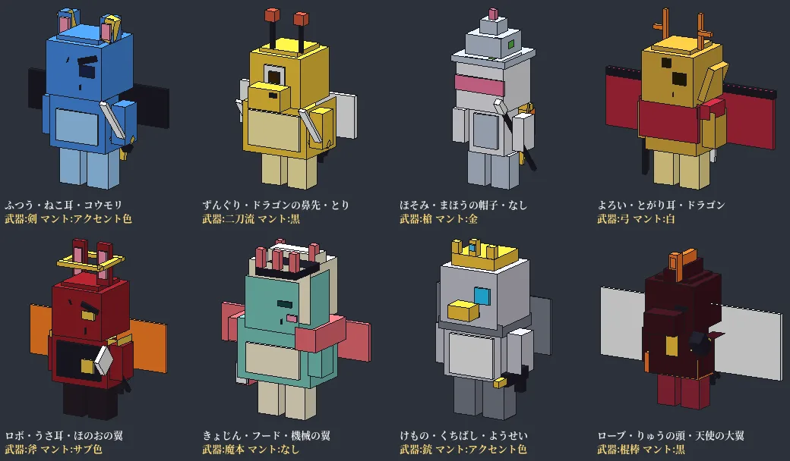

<title>マインクエスト 完全ガイド</title>
<meta name="claude:viewport-fit-sides" content="cover">
<link rel="preconnect" href="https://fonts.googleapis.com">
<link rel="stylesheet" href="https://fonts.googleapis.com/css2?family=DotGothic16&family=Zen+Kaku+Gothic+New:wght@400;500;700&display=swap">
<style>
:root{
  --bg:#f4f1e6;--panel:#fffdf6;--panel2:#efe9d6;--ink:#1d2420;--sub:#5b625a;--line:#d9d1ba;
  --moss:#3f6b3a;--moss2:#2c4f29;--gold:#a8761a;--gold2:#e8b84a;--chip:#e7e0c8;--link:#2f5f8a;
  --r-F:#8a8f86;--r-E:#4f8a5b;--r-D:#3d7fa8;--r-C:#7a5bb5;--r-B:#b8742a;--r-A:#c24a3a;--r-S:#c9921a;--r-SS:#d4467e;--r-X:#7d2fd0;
  --shadow:0 1px 0 rgba(0,0,0,.04),0 6px 18px -10px rgba(40,50,30,.25);
}
@media (prefers-color-scheme: dark){:root:not([data-theme="light"]){
  --bg:#141a16;--panel:#1c241f;--panel2:#232e27;--ink:#e8eadf;--sub:#a3ab9f;--line:#33402f;
  --moss:#7fb36f;--moss2:#9fd08c;--gold:#e8b84a;--gold2:#f3cf73;--chip:#2a352d;--link:#8cc0ea;
  --shadow:0 1px 0 rgba(0,0,0,.3),0 8px 22px -12px rgba(0,0,0,.6);color-scheme:dark}}
:root[data-theme="dark"]{
  --bg:#141a16;--panel:#1c241f;--panel2:#232e27;--ink:#e8eadf;--sub:#a3ab9f;--line:#33402f;
  --moss:#7fb36f;--moss2:#9fd08c;--gold:#e8b84a;--gold2:#f3cf73;--chip:#2a352d;--link:#8cc0ea;
  --shadow:0 1px 0 rgba(0,0,0,.3),0 8px 22px -12px rgba(0,0,0,.6);color-scheme:dark}
*{box-sizing:border-box}
body{background:var(--bg);color:var(--ink);font-family:"Zen Kaku Gothic New","Hiragino Sans","Noto Sans JP",system-ui,sans-serif;font-size:15px;line-height:1.75;margin:0}
a{color:var(--link)}
.px{font-family:"DotGothic16","Zen Kaku Gothic New",monospace;letter-spacing:.04em}
.wrap{max-width:1120px;margin:0 auto;padding-left:max(16px,env(safe-area-inset-left,0px));padding-right:max(16px,env(safe-area-inset-right,0px))}
header.top{background:var(--moss2);color:#f5f1e0;padding-block:22px 14px}
:root[data-theme="dark"] header.top{background:#0f1511}
@media (prefers-color-scheme: dark){:root:not([data-theme="light"]) header.top{background:#0f1511}}
.brand{display:flex;align-items:flex-end;gap:14px;flex-wrap:wrap}
.brand h1{margin:0;font-size:clamp(26px,5vw,40px);line-height:1.1;text-wrap:balance}
.brand .ver{font-size:13px;background:var(--gold2);color:#2a2005;padding:2px 10px;border-radius:999px}
.brand p{margin:6px 0 0;color:#d9e3cf;font-size:14px;flex-basis:100%}
nav.tabs{position:sticky;top:env(safe-area-inset-top,0px);z-index:5;background:var(--moss2);border-bottom:3px solid var(--gold2)}
:root[data-theme="dark"] nav.tabs{background:#0f1511}
@media (prefers-color-scheme: dark){:root:not([data-theme="light"]) nav.tabs{background:#0f1511}}
nav.tabs .wrap{display:flex;gap:4px;overflow-x:auto;scrollbar-width:none;padding-block:8px}
nav.tabs button{flex:0 0 auto;border:0;background:transparent;color:#dfe8d4;font:inherit;font-size:14px;padding:6px 12px;border-radius:8px;cursor:pointer}
nav.tabs button[aria-current="true"]{background:var(--gold2);color:#2a2005;font-weight:700}
main{padding-block:22px 60px}
section.page{display:none}section.page.on{display:block}
h2{font-size:22px;margin:6px 0 14px;display:flex;align-items:center;gap:10px;text-wrap:balance}
h2 .px{font-size:13px;color:var(--gold);border:1px solid var(--gold);padding:0 8px;border-radius:4px}
h3{font-size:17px;margin:22px 0 8px;text-wrap:balance}
p.lead{color:var(--sub);margin:0 0 14px;max-width:70ch;overflow-wrap:anywhere}
section.page{overflow-wrap:anywhere}
.grid{display:grid;gap:12px;grid-template-columns:repeat(auto-fill,minmax(260px,1fr))}
.card{background:var(--panel);border:1px solid var(--line);border-radius:12px;padding:14px 16px;box-shadow:var(--shadow);min-width:0;overflow-wrap:anywhere}
.grid>*,.list>*{min-width:0}
.card h4{margin:0 0 6px;font-size:15px}
.card p{margin:4px 0;font-size:14px}
.card ul{margin:4px 0;padding-left:1.2em;font-size:14px}
.stats{display:grid;grid-template-columns:repeat(auto-fill,minmax(130px,1fr));gap:10px;margin:14px 0}
.stat{background:var(--panel);border:1px solid var(--line);border-radius:12px;padding:10px 14px}
.stat b{display:block;font-size:24px;color:var(--moss)}
.stat span{display:block;font-size:12px;color:var(--sub);letter-spacing:.05em;overflow-wrap:anywhere}
.tw{overflow-x:auto;border:1px solid var(--line);border-radius:12px;background:var(--panel)}
table{border-collapse:collapse;width:100%;font-size:14px}
th,td{padding:7px 10px;border-bottom:1px solid var(--line);text-align:left;vertical-align:top}
th{background:var(--panel2);font-weight:700;white-space:nowrap}
tr:last-child td{border-bottom:0}
.chip{display:inline-block;font-size:12px;background:var(--chip);border-radius:999px;padding:0 8px;margin:1px 3px 1px 0;white-space:nowrap}
.chip.g{background:var(--gold2);color:#2a2005}.chip.m{background:var(--moss);color:#fff}.chip.n{background:transparent;border:1px solid var(--line)}
.rk{display:inline-block;min-width:28px;text-align:center;color:#fff;border-radius:5px;font-size:12px;font-weight:700;padding:0 5px}
.tools{display:flex;flex-wrap:wrap;gap:8px;margin:0 0 12px;align-items:center}
.tools input,.tools select{font:inherit;font-size:14px;padding:7px 10px;border-radius:9px;border:1px solid var(--line);background:var(--panel);color:var(--ink);min-width:0}
.tools input{flex:1 1 220px}
.count{font-size:13px;color:var(--sub)}
.list{display:grid;gap:10px;grid-template-columns:repeat(auto-fill,minmax(300px,1fr))}
.item{background:var(--panel);border:1px solid var(--line);border-radius:12px;padding:12px 14px;min-width:0}
.item .hd{display:flex;gap:6px;align-items:center;flex-wrap:wrap;margin-bottom:4px}
.item .nm{font-weight:700;font-size:15px}
.item .sm{font-size:13px;color:var(--sub);overflow-wrap:anywhere}
.item details{margin-top:6px;font-size:13px}
.item summary{cursor:pointer;color:var(--link)}
.bars{display:grid;grid-template-columns:auto 1fr auto;gap:2px 8px;font-size:12px;align-items:center;margin:6px 0}
.bar{height:6px;background:var(--panel2);border-radius:3px;overflow:hidden}.bar i{display:block;height:100%;background:var(--moss)}
.more{display:block;margin:14px auto 0;font:inherit;padding:8px 20px;border-radius:999px;border:1px solid var(--line);background:var(--panel);color:var(--ink);cursor:pointer}
.steps{counter-reset:s;list-style:none;padding:0;margin:0;display:grid;gap:8px}
.steps li{counter-increment:s;background:var(--panel);border:1px solid var(--line);border-radius:12px;padding:10px 14px 10px 48px;position:relative}
.steps li::before{content:counter(s);position:absolute;left:12px;top:10px;width:26px;height:26px;border-radius:7px;background:var(--moss);color:#fff;display:grid;place-items:center;font-weight:700;font-size:13px}
.ol{margin:0;padding-left:1.2em}
.note{border-left:4px solid var(--gold);background:var(--panel);padding:10px 14px;border-radius:0 10px 10px 0;margin:12px 0;font-size:14px}
.ch{display:grid;gap:10px}
.ch .card h4{color:var(--gold)}
.theme{margin-left:auto;background:transparent;border:1px solid #ffffff55;color:#f5f1e0;border-radius:999px;font:inherit;font-size:12px;padding:3px 10px;cursor:pointer}
.mono{font-variant-numeric:tabular-nums}
@media (max-width:520px){h2{font-size:19px}.list{grid-template-columns:1fr}}
.mrow{display:flex;gap:12px;align-items:flex-start}.mcol{min-width:0;flex:1}
.spr{flex:0 0 72px;width:72px;height:72px;background-size:720px 720px;background-repeat:no-repeat;border-radius:10px;background-color:var(--chip, rgba(127,127,127,.12));image-rendering:auto}
.pp{display:flex;gap:14px;align-items:flex-start}.pp img{flex:0 0 96px;width:96px;height:150px;object-fit:contain;image-rendering:pixelated;background:var(--chip);border-radius:10px}
.rkt td,.rkt th{padding:6px 8px;text-align:left;vertical-align:middle}.rkt .no{font-weight:900;width:2.5em;text-align:center}.rkt .v{font-variant-numeric:tabular-nums;font-weight:700;text-align:right;white-space:nowrap}.rkt .spr{display:block;flex:none;width:48px;height:48px;background-size:480px 480px;border-radius:8px}.rkt .bar{display:block;min-width:60px}.rkt .nm{min-width:0}@media (max-width:640px){.rkt .fm,.rkt .bc{display:none}.rkt td,.rkt th{padding:6px 5px}}.rkt tr.top1 .no{color:#c9a227}.rkt tr.top2 .no{color:#8f9aa6}.rkt tr.top3 .no{color:#b0703c}.stb{display:flex;flex-wrap:wrap;gap:6px;margin:10px 0}.stb button{border:1px solid var(--line);background:var(--panel);color:inherit;font:inherit;font-size:14px;padding:6px 12px;border-radius:999px;cursor:pointer}.stb button[aria-pressed="true"]{background:var(--gold2);color:#2a2005;border-color:var(--gold2);font-weight:700}
.gal{display:grid;grid-template-columns:repeat(auto-fill,minmax(92px,1fr));gap:8px}.gal figure{margin:0;text-align:center;font-size:11px}.gal .spr{display:block;margin:0 auto 2px}
</style>

<header class="top">
  <div class="wrap">
    <div class="brand">
      <h1 class="px">マインクエスト</h1><span class="ver px" id="ver">v—</span>
      <button class="theme" id="themeBtn" type="button" aria-label="表示の 明るさを 切り替える">◐ 明暗</button>
      <p>マイクラ統合版の モンスター育成RPG アドオン ― 遊び方・バトル・世界・クリア後・全データ図鑑</p>
    </div>
  </div>
</header>
<nav class="tabs" aria-label="ページ"><div class="wrap" id="tabs"></div></nav>

<main class="wrap" id="main">
  <p id="loading" class="lead">データを 読み込んでいます…</p>
</main>

<script>
(() => {
const $ = (s, r = document) => r.querySelector(s);
const esc = (s) => String(s ?? "").replace(/[&<>"]/g, (c) => ({ "&": "&amp;", "<": "&lt;", ">": "&gt;", '"': "&quot;" }[c]));
const kata = (t) => String(t || "").replace(/[ぁ-ゖ]/g, (c) => String.fromCharCode(c.charCodeAt(0) + 0x60)).replace(/\s/g, "").toLowerCase();
const rk = (r) => `<span class="rk" style="background:var(--r-${r})">${r}</span>`;
const chip = (t, c = "") => `<span class="chip ${c}">${esc(t)}</span>`;
try { const th = localStorage.getItem("mq-theme"); if (th) document.documentElement.dataset.theme = th; } catch {}
$("#themeBtn").onclick = () => { const cur = document.documentElement.dataset.theme || (matchMedia("(prefers-color-scheme: dark)").matches ? "dark" : "light"); const nx = cur === "dark" ? "light" : "dark"; document.documentElement.dataset.theme = nx; try { localStorage.setItem("mq-theme", nx); } catch {} };

const PAGES = [["home", "ホーム"], ["play", "遊び方"], ["battle", "バトル"], ["world", "世界と 物語"], ["people", "人物"], ["post", "クリア後"], ["eg", "やりこみ"], ["explore", "探索"], ["town", "町"], ["bond", "きずな"], ["minigame", "ミニゲーム"], ["guide", "おすすめ モンスター"], ["boss", "ボス攻略"], ["mons", "モンスター"], ["rank", "ランキング"], ["moves", "技"], ["skills", "スキル"], ["traits", "特性"], ["items", "道具"], ["fuse", "配合"], ["multi", "導入・マルチ"]];

fetch("mq.json").then((r) => { if (!r.ok) throw 0; return r; }).catch(() => fetch("https://raw.githubusercontent.com/JOKER05www/Mine-Quest/main/guide/mq.json")).then((r) => r.json()).then(init).catch(() => { $("#loading").textContent = "データを 読み込めませんでした。ページを 開きなおしてください。"; });

function fxPair(x) { return x[2] ? `${x[0]} → ${x[1]}（この 順に えらぶ）` : `${x[0]} × ${x[1]}`; }
function fxLines(f) {
  if (!f) return [];
  const L = [];
  if (f.sp) L.push(`特別配合: ${f.sp[0]} × ${f.sp[1]}`);
  for (const r of f.s4 || []) L.push(`4体配合: ${r.join("・")}`);
  for (const r of f.ro || []) L.push(`奇跡の配合: ${r.join(" × ")}`);
  for (const r of f.p || []) L.push(`配合: ${fxPair(r)}`);
  return L;
}
function init(D) {
  $("#ver").textContent = "v" + D.ver;
  const main = $("#main"); main.innerHTML = "";
  const tabs = $("#tabs");
  for (const [id, n] of PAGES) {
    const b = document.createElement("button"); b.type = "button"; b.textContent = n; b.dataset.p = id; b.onclick = () => go(id); tabs.appendChild(b);
    const s = document.createElement("section"); s.className = "page"; s.id = "p-" + id; main.appendChild(s);
  }
  const built = {};
  function go(id, push = true) {
    if (!PAGES.some(([p]) => p === id)) id = "home";
    for (const b of tabs.children) b.setAttribute("aria-current", b.dataset.p === id ? "true" : "false");
    for (const s of main.children) s.classList.toggle("on", s.id === "p-" + id);
    if (!built[id]) { built[id] = 1; BUILD[id]($("#p-" + id)); }
    if (push) { try { history.replaceState(null, "", "#" + id); } catch {} window.scrollTo({ top: 0 }); }
    const cur = tabs.querySelector('[aria-current="true"]'); if (cur) cur.scrollIntoView({ inline: "center", block: "nearest" });
  }
  window.addEventListener("hashchange", () => go(location.hash.slice(1), false));

  const G = Object.fromEntries(D.gloss);
  const gcard = (t) => G[t] ? `<div class="card"><h4>${esc(t)}</h4><ul>${G[t].map((l) => `<li>${esc(l)}</li>`).join("")}</ul></div>` : "";
  const C = D.counts;

  // ---------- ページ ----------
  const BUILD = {
    home(el) {
      el.innerHTML = `
      <h2><span class="px">HOME</span>マインクエストへ ようこそ</h2>
      <p class="lead" style="border-left:4px solid var(--gold);padding-left:12px">作者より: マイクラで モンスター育成RPGを 遊びたくて、Claudeと いっしょに 作りました。思った 以上の できに なったので、ぜひ 遊んで みて ください。すべて 無料で、お金は 一切 かかりません。</p>
      <p class="lead">モンスターを スカウトして 育て、配合で 強く する RPGです。旅は アルカトラス地方の 町 ルミナに ある 自分の 家から はじまる。11の 地方を めぐり、15枚の 石板を 封印しよう。</p>
      <div class="stats">
        <div class="stat"><b class="mono">${C.mons}</b><span>モンスター</span></div><div class="stat"><b class="mono">${C.moves}</b><span>技</span></div>
        <div class="stat"><b class="mono">${C.skills}</b><span>スキル</span></div><div class="stat"><b class="mono">${C.traits}</b><span>特性（＋固有特性 ${C.mons}）</span></div>
        <div class="stat"><b class="mono">${C.items}</b><span>道具・装備</span></div><div class="stat"><b class="mono">${C.combos}</b><span>ロマン配合スキル（系統）</span></div>
      </div>
      <h3>新しく なった こと</h3>
      <div class="card"><h4>第103版: モンスターと あそぶ（ミニゲーム 30）</h4><ul><li>ガイドブック → 冒険 →「モンスターと あそぶ」。仲間が 目の 前で 動く かけっこ・すもう・ダンス・鬼ごっこ・かくれんぼ・クイズ・すごろく など 30種類（<a href="#minigame">くわしく</a>）</li><li>ゲームの 中で アップデート情報が 見られる（冒険 → 遊び方 → アップデート情報）</li><li>用語の 説明を 実際の 数値に 合わせて 直した・見つかった 不具合と 重さを 直した</li></ul></div>
      <div class="card"><h4>第102版: 町・きずな・探索の 追加</h4><ul><li>町の 広場（依頼・くじ・お祭り・発展度）・<a href="#town">町</a></li><li>なつき度 5段階・好物・思い出・<a href="#bond">きずな</a></li><li>探索の 新しい 場所 24種・料理と 畑・レース など（<a href="#explore">探索</a>）</li></ul></div>
      <h3>はじめの 一歩</h3>
      <ol class="steps">
        <li>アドオン（本体）を 入れて ワールドを 作る。ルミナの 自分の 家から スタート</li>
        <li>ガイドブックを 使って 最初の 仲間を えらぶ。メニューは すべて ガイドブックから</li>
        <li>草原の モンスターを なぐると バトル。HPを けずって スカウトしよう</li>
        <li>レベルアップで もらえる SP（スキルポイント）を スキルに 振って 技と 能力を 覚える</li>
        <li>アルカトラス城の 地方マスターに 勝つと 最初の 石板「苔むしの石板」が もらえる</li>
        <li>石板を 使うと 中の 世界へ 入れる。奥に いる 主を 倒すと 封印。15枚 ぜんぶ 封印し、闘技場の 星冠王にも 勝つと エンディング</li>
      </ol>
      <h3>マインクエストの 特色</h3>
      <div class="grid">
        <div class="card"><h4>10の 系統・${C.mons}体</h4><p>粘液・獣・動物・海・無機物・ネザー・武者・竜・王・神。鳥や 虫、植物、熊・虎・狼は <b>動物系</b>、悪魔や 死者、ネザーの 住民は <b>ネザー系</b>。</p></div>
        <div class="card"><h4>王と 神</h4><p>王は 全員 SSランクで、名前は「〇王」。2〜3回 行動する。神は 全員 Xランク。配合で 生まれる 神は 3〜4回 行動する。神の石板（クリア後）の 神 15柱は 配合では 生まれず、2〜3回 行動。神は それぞれ 色の ちがう 後光を まとう。</p></div>
        <div class="card"><h4>配合の 楽しみ</h4><p><b>ロマン配合</b>（親の スキルの 組み合わせで 生まれる ${C.combos}系統の スキル）・<b>奇跡の配合</b>（決まった 2体から 思わぬ モンスター）・<b>4体配合</b>（王と 神）。</p></div>
        <div class="card"><h4>地方ごとの 景色</h4><p>草原と 花畑の アルカトラス、苔と 泥の 湿地帯 シルヴァ、黒い 岩の 火山 ヴォルカ…。地方ごとに 地面や 草木が かわる。町の 中には 水が 流れこまない。</p></div>
        <div class="card"><h4>読みやすい 太字</h4><p>マインクエストを 入れると ゲームの 日本語が 太く 見やすい 字に なる（いらない ときは フォントの パックだけ はずせる）。</p></div>
        <div class="card"><h4>こまったら「バグを 直す」</h4><p>ガイドブック → 冒険 →「バグを 直す」で、戦いの あとに 画面が 残った、物語が 進まない、などの ときに その場で 直せる。</p></div>
      </div>
      <p><a href="#guide">ストーリーで 役立つ おすすめの モンスター →</a></p>`;
    },
    play(el) {
      el.innerHTML = `
      <h2><span class="px">PLAY</span>遊び方</h2>
      <div class="card" style="border:2px solid var(--gold2);margin-bottom:16px"><h4>⚠ 注意書き（はじめに 読もう）</h4><ul>
        <li><b>戦いで 使える 技は 6つまで。</b> 技は いくつでも 覚えられるが、戦いに 出せるのは 6つだけ。<b>作戦</b> → モンスター → <b>戦いで 使う 技（6つ）</b> で えらぶ。えらばない ときは 自動で 6つ きまる。</li>
        <li><b>パーティは 4体 ではなく 4枠。</b> S=1枠・M=2枠・L=3枠・G=4枠。Gサイズは 1体で いっぱい。</li>
        <li><b>配合すると 親の 2体は いなくなる。</b> 子は 親の スキルや プラス値を 引きつぐ。</li>
        <li><b>物語の とちゅうは レベルが 上がりにくい ことが ある。</b> レベルが「次の 石板の 主の Lv＋2」を こえると、もらえる 経験値が 10分の1に なる。石板を 封印すると この 上限が 上がる。エンディング後は 上限なし。</li>
        <li><b>野生や ボスに 負けると お金が 半分</b>になり、近くの 町の 宿屋で 目を さます（全回復）。物語の 戦いや 石板の 中では 宿屋へは 行かない。こうさん・時間切れ・闘技場では お金は へらない。</li>
        <li><b>スカウトは 失敗するたびに 成功率が 上がる。</b> 失敗すると 15%で 相手が 怒って、その 戦いでは もう スカウトできない。物語の 石板の 主や 地方マスターは スカウトできない。</li>
        <li><b>ハガネ族は とても 固い。</b> 会心・物理系・武系が 効く（会心は 守りを 無視）。</li>
        <li><b>作戦（先手必勝 など）と 技の 好みは オートで 戦う ときの 動き方。</b> 自分で 技を 選ぶ ときは 関係ない。</li>
        <li><b>物語の 十五の 石板は バッグの「特別な石板」</b>に 入る（持ち物には 出ない）。ガイドブック → 道具・装備 → バッグ から 使う。</li>
        <li><b>2回行動などは 交代制。</b> 全員の 1回目 → 全員の 2回目 … の 順に 動く。</li>
        <li><b>専門の スキル</b>は 1つの 分野（強化・弱体・反射・耐性・物理系・武系・特質系・魔法系）だけの スキル。覚える モンスターの ほか、モンスターが 落とす スキル書でも 身につく。</li>
        <li><b>技の くわしい 効果は いつでも 見られる。</b> スキル振り分け・配合・作戦・図鑑などの 画面で「技の くわしい 効果を 見る」を えらぶ。スキルの書を 使う ときも、忘れる スキルと 覚える スキルを 見くらべられる。</li>
        <li><b>名前の 色で 仲間に したか 分かる。</b> 配合の 子・おすすめ配合・スカウトの 相手・タマゴなどで <span style="color:#3c3">●</span>＝仲間に した ことが ある、<span style="color:#d90">NEW!</span>＝まだ。</li>
        <li><b>上の 編の スキルの書</b>（例: 熟練編）を、同じ スキルの 下の 編（例: 入門編）を 持つ 子に 使うと、その場で 上の 編に かわる。振った ポイントは そのまま。</li>
        <li><b>ゲーム内の 長い 一覧は「さがす・ページを とぶ」</b>で 名前で しぼりこめる。</li>
        <li><b>裏（スタンバイ）に 控えを 入れて おこう。</b> 表が 全員 倒れても 戦いが 続く。戦いの 中で 入れかえた 子は その ターン 動けない。</li>
        <li><b>モンスター闘技場（かけ）は「結果だけ 見る」</b>で 観戦を とばせる。</li>
        <li><b>クリア後に できる ことは</b> ガイドブック → 用語説明 →「クリア後に できること」に まとまって いる。</li>
        <li>ゲーム内でも ガイドブック → 用語説明 → <b>注意書き（はじめに 読もう）</b> で 見られる。</li>
      </ul></div>
      <div class="grid">
        <div class="card"><h4>ガイドブック</h4><p>使うと メニューが 開く。仲間・スキル・道具・図鑑・配合・設定・用語説明 などは すべて ここから。</p></div>
        <div class="card"><h4>スカウト</h4><p>バトル中の「スカウト」で 仲間に。仲間が 1体ずつ 力を 見せつけて、成功率を ためる。<b>見せつける 力は、その 子の いちばん 強い 攻撃の 能力（物力・武力・魔力）と、相手の 守り（硬力 または 魔硬力）を くらべて 決まる</b>。2回 行動する 子は 2回 見せつける。HPを 削るほど・鈴や お香を 使うほど・魅了するほど 成功しやすい。</p></div>
        <div class="card"><h4>スキルと SP</h4><p>SPを 振ると、3・5・6・8・10pt、その あとは 3〜5ptごとに 技か 能力アップが もらえる。1つの スキルで 覚える 技は 最大 10こ。編は 入門編 → 熟練編 → 達人編 → 皆伝編の 順に 強く なる。<b>ポイントを 振るほど 能力の 上がり幅も 大きく なる</b>（入門 +3→+8・熟練 +5→+12・達人 +8→+16・皆伝 +11→+22。HPは この 3倍、MPは 2倍）。</p></div>
        <div class="card"><h4>固有スキル</h4><p>SSランク（王も）と Xランクの 神は 生まれつき その モンスターだけの スキルを もつ（枠とは べつ）。振ると 得意な 属性や 攻撃の 技を 覚え、高い 能力が さらに 伸びる。100ptで その モンスターだけの 特性が 目覚める。配合の 子には 引き継がれない。</p></div>
        <div class="card"><h4>物語で 解放</h4><p>装備の レア度と タマゴから 生まれる ランクには 上限が ある。はじめは E まで。石板の 封印・遺跡・カップで D・C・B・A・S と 上がり、エンディングで SS、クリア後に さらに 進むと X。</p></div>
        <div class="card"><h4>色がえ</h4><p>仲間 →「色がえ」で 1体ずつ 頭・体・手・足・爪・翼や飾りの 色を 16色から。おまかせ・もとに もどす も ある。</p></div>
        <div class="card"><h4>個体の 特性（厳選）</h4><p>特性の 一部は 個体ごとに ちがう（図鑑の ◇）。行動回数・系統の王・固有特性は かわらない。1つは かならず 元の まま 残る。入れかわる 特性の 1つめは、元の 特性と 相性の よい もの。</p></div>
        <div class="card"><h4>パーティ 4枠</h4><p>S=1枠・M=2枠・L=3枠・G=4枠。大きい ほど 能力の 伸びが 大きい。L・Gは 物理・武系が 敵全体に、Gは 2回 攻撃。</p></div>
        <div class="card"><h4>装備</h4><p>武器は 16種で、それぞれ 4段 ある。レア度は F〜X。種類ごとに 戦う 能力と 通常攻撃が ちがう（くわしくは「道具」の ページ）。<b>二刀流は 通常攻撃が 2回</b>。<b>属性の 武器は 技つき</b>（雷の 剣→稲妻斬、段2以上は 迅雷一閃 など）。腕の ある モンスターは 武器を 手に 持ち、武器に あわせた 動きで 攻撃する。装備には 特殊効果（反射・HP吸収・MP吸収 など）が つき、レア度が 高いほど 強い。</p></div>
        <div class="card"><h4>能力の 実</h4><p>○○の実 +1〜3・大○○の実 +10・○○の秘果 +50・超○○の神果 +100（HP・MPは この 2倍）。％ではなく 数値が そのまま 足される。万能の実は すべての 能力が 上がる。</p></div>
        <div class="card"><h4>町と 冒険のコンパス</h4><p>各地方に 町と 城が ある。町には 店・宿屋・図書館・釣り屋・闘技場。コンパスで 城・ステージ・町を えらんで 案内できる。道ばたの 宝箱にも お宝。</p></div>
        <div class="card"><h4>相棒（カスタム）</h4><p>最初に えらぶ 相棒は 仲間 →「相棒（カスタム）」で いつでも 作りかえられる。色 18・体 11・頭 10・顔 12・ツノ 10・つばさ 8・しっぽ 8・<b>マント 6</b>・<b>武器 8</b>。武器を 装備すると その 武器を 持ち（二刀流は 両手に 剣）、攻撃の 動きも 武器ごとに かわる。</p></div>
        <div class="card"><h4>ライド・釣り</h4><p>連れ歩きの 仲間に 右クリックで ライド（歩く・浮く・飛ぶ・潜る・よじ登る・掘り進む）。種類ごとに 乗った ときの 動きも ちがう。釣り屋で 釣竿を 買って 水に 向かって 使う。</p></div>
        <div class="card"><h4>重いとき</h4><p>ガイドブック → 冒険 →「設定」で 軽量モードに する。または 軽量化アドオンを 入れて、本体より 上に 置く。</p></div>
      </div>
      <h3>相棒の 見た目と 武器</h3>
      <p class="lead">下は 組み合わせの 例。持つ 武器は 見た目の 設定で えらべる。武器を 装備しても 自動で その 武器に なる。</p>
      
      <div class="tw" style="margin-top:10px"><table><tr><th>武器</th><th>持ち方</th><th>攻撃の 動き</th></tr>
      <tr><td>剣</td><td>右手</td><td>ふりかぶって 斬りおろす</td></tr><tr><td>二刀流</td><td>両手に 剣</td><td>左右の 連撃</td></tr>
      <tr><td>槍</td><td>右手</td><td>ためて 突く</td></tr><tr><td>斧・こん棒</td><td>右手</td><td>両手で かかげて たたきつける</td></tr>
      <tr><td>弓</td><td>左手</td><td>引きしぼって 射る</td></tr><tr><td>銃</td><td>右手</td><td>かまえて 撃つ（反動）</td></tr><tr><td>魔本</td><td>左手</td><td>かかげて 放つ</td></tr></table></div>
      <h3>装備の レア度と 特殊効果（F〜X）</h3>
      <p class="lead">手に 入れた ときに レア度が きまる。高いほど 能力が 高く、特殊効果が 多く・強い。<b>物語の 進みで 上限が 解放</b>（はじめは E まで）。数字は その レア度で 出る 最大値（%）。</p>
      <div class="tw"><table><tr><th>効果</th><th>つく 装備</th>${D.gearfx.rar.map(([r]) => `<th>${rk(r)}</th>`).join("")}</tr>
      ${D.gearfx.fx.map(([n, sl, v]) => `<tr><td style="white-space:nowrap"><b>${esc(n)}</b></td><td style="white-space:nowrap">${esc(sl)}</td>${v.map((x) => `<td class="mono">${x}</td>`).join("")}</tr>`).join("")}
      <tr><td>特殊効果の 数</td><td></td>${D.gearfx.rar.map(([, , n]) => `<td class="mono">${n}</td>`).join("")}</tr></table></div>
      <h3>宝箱の レア度（10段階）</h3>
      <p class="lead">どの 宝箱も 中身は <b>5〜10こ</b>。段が 高いほど よい ものが 出る。段は 箱の 色で 分かる（1 たる・2 チェスト・3 灰・4 白・5 黄・6 黄緑・7 赤紫・8 赤・9 黒・10 紫）。銀の宝箱 以上は 光の 粒が 出る。王家の宝箱 以上は ワールドの 全員に お知らせが 出る。どの 場所でも ときどき 1〜4段 上の 箱に なる（+1: 22%・+2: 6%・+3: 1.5%・+4: 0.3%）。下の 表の 数字は、その 品が 入っている 確率（1万回 ためした 結果）。</p>
      <div class="tw"><table><tr><th>段</th><th>宝箱</th><th>中身の 数</th>${D.chests.cats.map((c) => `<th style="white-space:nowrap">${esc(c)}</th>`).join("")}</tr>
      ${D.chests.names.map((n, i) => { const [c, L] = D.chests.res[i + 1]; return `<tr><td class="mono" style="white-space:nowrap">${i + 1}</td><td style="white-space:nowrap"><b>${esc(n)}</b></td><td class="mono" style="white-space:nowrap">約${c}</td>${L.map((v) => `<td class="mono" style="white-space:nowrap">${v ? v + "%" : "-"}</td>`).join("")}</tr>`; }).join("")}</table></div>
      <div class="grid" style="margin-top:12px">
        <div class="card"><h4>出る 場所</h4><ul><li>道ばたの 宝箱: 小さな宝箱〜（強い 土地は +1〜2）</li><li>洞くつ: 木の宝箱〜（Y0より 下 +1）</li><li>海の 底（もぐると 見つかる）: 鉄の宝箱〜（深海 +1）</li><li>ネザー: 鉄の宝箱〜・エンド: 銀の宝箱〜（外の 島 +1）</li><li>町の 家: 鉄の宝箱〜</li><li>遺跡・神殿・城の 宝: 金の宝箱〜（ネザー +2・エンド +3）</li><li>地方の ステージ: 銀の宝箱〜が 1つ、ほかは 木の宝箱〜</li></ul></div>
        <div class="card"><h4>石板と ボス</h4><ul><li>物語の 石板の 中: 鉄〜金の宝箱（最後の 階は +1）</li><li>再戦・覇王の石板: 魔法の宝箱〜（いちばん 上の 神箱も 出る）</li><li>神域の石板: 王家の宝箱〜（神箱も）</li><li>再会の石板: 銀の宝箱〜</li><li>遺跡の ボスの さいだん: 宝石の宝箱〜</li><li>宝の地図: 魔法の宝箱〜・3%で 神箱</li></ul></div>
      </div>
      <h3>ゲーム内の 遊び方メモ</h3>
      <div class="grid">${gcard("スカウト")}${gcard("ランク・サイズ・枠")}${gcard("特性と 行動回数")}${gcard("スキルの 段階")}${gcard("装備")}${gcard("落とし物")}${gcard("進化・覚醒")}${gcard("相棒の 見た目と 武器")}${gcard("SS・Xランクの すがた")}${gcard("装備の 特殊効果（F〜X）")}${gcard("色がえ")}${gcard("戦闘の 画面")}${gcard("持ち物")}${gcard("ライドの 種類")}${gcard("モンスター闘技場")}</div>`;
    },
    battle(el) {
      el.innerHTML = `
      <h2><span class="px">BATTLE</span>バトルの しくみ</h2>
      <p class="lead">ダメージは おおよそ「攻撃の 能力 ÷2 − 守りの 能力 ÷4」。攻撃の 種類は 5つ、属性は 10種と 無属性。能力の 段階は −6〜+6 で、+1で 1.5倍、−1で 0.67倍。</p>
      <h3>能力の 段階</h3>
      <div class="tw"><table><tr><th>段階</th>${[1, 2, 3, 4, 5, 6].map((n) => `<th>+${n} / −${n}</th>`).join("")}</tr>
      <tr><td>上昇</td>${[1, 2, 3, 4, 5, 6].map((n) => `<td class="mono">${parseFloat(((2 + n) / 2).toFixed(2))}倍</td>`).join("")}</tr>
      <tr><td>下降</td>${[1, 2, 3, 4, 5, 6].map((n) => `<td class="mono">${(2 / (2 + n)).toFixed(2)}倍</td>`).join("")}</tr></table></div>
      <div class="grid" style="margin-top:12px">${["戦闘の 表示", "ダメージの 計算", "攻撃の 種類", "攻撃の 種類の 特質", "属性（10種）", "耐性", "状態異常（10種）", "行動順と 封印", "技の 種類", "能力の 段階（上昇・下降）", "系統（10）と ボーナス"].map(gcard).join("")}</div>
      <h3>天候</h3>
      <p class="lead">戦いの 場の 天候で 属性の 威力が かわる。<b>闘技場は いつも 晴れ</b>。野生の 戦いは 場所と ワールドの 天気で きまる。天候の 技・特性で 変えられる。</p>
      <div class="tw"><table><tr><th>天候</th><th>効果</th></tr>${D.v29.weather.map(([k, n, d]) => `<tr><td style="white-space:nowrap"><b>${esc(n)}</b></td><td>${esc(d)}</td></tr>`).join("")}</table></div>
      <h3>先制度</h3>
      <p class="lead">すべての 技に 先制度（−2〜+4）が ある。先制度の 高い 技から 先に 動く。同じ ときは 走力の 高い 順。</p>
      <div class="tw"><table><tr><th>先制度</th><th>技の 数</th><th>例</th></tr>${D.v29.pri.map(([p, n, ex]) => `<tr><td class="mono" style="white-space:nowrap">${p > 0 ? "+" : ""}${p}</td><td class="mono">${n}</td><td>${esc(ex)}</td></tr>`).join("")}</table></div>
      <div class="grid" style="margin-top:12px">${gcard("ダメージの 上限")}${gcard("連続攻撃の 減衰")}${gcard("天候（9種）")}${gcard("先制度")}${gcard("命中・回避・急所ランク")}${gcard("戦いの ドーム")}</div>
      <h3>戦いの 場と 便利な 表示</h3>
      <div class="grid"><div class="card"><h4>上空の 戦いの 場</h4><p>戦いが はじまると、いまの 場所の <b>真上の 高い 空</b>に その 地方らしい ステージが できて、そこで 戦う。地面は こわれず、下からは 見えない。終わると もとの 場所へ もどる。足場から 落ちても ステージに もどされる。</p></div>
        <div class="card"><h4>負けたら 宿屋へ</h4><p>野生・ボス・レイドに 全滅すると、<b>近くの 町の 宿屋</b>で 目を さます（仲間は 全回復・お金は 半分 落とす）。物語の 戦いは その場で 再挑戦できる。</p></div>
        <div class="card"><h4>弱点・相性と おすすめ</h4><p>行動の 画面に 相手の 弱点が いつも 出る。技の 横の 記号で 効き目が 分かる（◎＝ばつぐん・○＝ふつう・△＝いまひとつ・×＝無効・吸＝吸収される・↩＝反射される・鋼＝ハガネ族）。<b>★</b>は 状況分析で えらんだ おすすめの 技。相手を えらぶ 画面には ダメージの 目安（相手の 最大HPの 約何%か）が 出る。「弱点・相性を しらべる」で くわしく 見られる。</p></div>
        <div class="card"><h4>スカウトの「あきらめない 気持ち」</h4><p>失敗する たびに、同じ 種族の スカウト率が <b>+3%</b>（最大 +24%）。戦いが 終わっても 引きつがれ、その 種族を 仲間に すると 0に もどる。失敗すると 15%で 相手が 怒る。</p></div>
        <div class="card"><h4>作戦（6つ）</h4><p>オートで 戦う ときの 動き方。先手必勝（攻撃 中心）・状況分析（場面に あわせる）・搦手上手（状態異常と 弱体）・反撃時間（反射技）・後援者（強化で 助ける）・MP使うな（MPを 使わない）。</p></div></div>
      <h3>対戦の かけひき</h3>
      <div class="grid">${gcard("対戦の かけひき")}${gcard("組み合わせの 例")}${gcard("こうさん・マルチ")}</div>`;
    },
    world(el) {
      el.innerHTML = `
      <h2><span class="px">WORLD</span>アストラ大陸と 石板の 物語</h2>
      <p class="lead">11の 地方に それぞれ 城と 町・ステージ。地方ごとに すむ モンスターと 強さが ちがう。</p>
      <div class="tw"><table><tr><th>地方</th><th>強さ</th><th>多い 系統</th><th>ランク</th><th>城</th></tr>
      ${D.regions.map((R) => `<tr><td><b>${esc(R.n)}</b><div class="sm" style="color:var(--sub);font-size:12px">${esc(R.d)}</div></td><td class="mono">Lv${R.lv[0]}〜${R.lv[2]}</td><td>${R.fam.map(([f, p]) => chip(`${f} ${p}%`)).join("")}</td><td>${R.rank.map(([r, p]) => `${rk(r)} <span class="mono" style="font-size:12px">${p}%</span>`).join(" ")}</td><td>${esc(R.c)}</td></tr>`).join("")}</table></div>
      <h3>物語の 冒険（メインクエスト）</h3>
      <p class="lead">その 地方の 物語の ボス（<b>主</b>）を 倒すと、次の 地方へ 行ける（クリア後に 出る「地方の 主」とは べつ）。まだ 行けない 地方に 入ろうと すると「まだ やるべき ことが あるようだ、引き返そう」と 押しもどされる。いまの 目標は ガイドブック → ストーリー → 次の 目標、または「セオの 研究メモ」で 分かる。</p>
      <div class="tw"><table><tr><th>#</th><th>地方</th><th>目標</th></tr>${D.saga.mq.map(([r, h], i) => `<tr><td class="mono" style="white-space:nowrap">${i + 1}</td><td style="white-space:nowrap">${r >= 0 && r < D.saga.regions.length ? esc(D.saga.regions[r]) : "クリア後"}</td><td>${esc(h)}</td></tr>`).join("")}</table></div>
      <h3>だいじなもの（ストーリーアイテム）</h3>
      <div class="tw"><table><tr><th>名前</th><th>はたらき</th></tr>${D.saga.keys.map(([n, d]) => `<tr><td style="white-space:nowrap"><b>${esc(n)}</b></td><td>${esc(d)}</td></tr>`).join("")}</table></div>
      <div class="grid" style="margin-top:12px">${gcard("物語の 冒険（メインクエスト）")}${gcard("地方の 関所")}${gcard("マスターと ライバル")}${gcard("負けイベント")}${gcard("だいじなもの")}${gcard("石板の 道具")}${gcard("町の 近くの 神殿")}${gcard("地方の 景色")}</div>
      <h3>海・洞くつ・ネザー・エンド</h3>
      <div class="grid">${gcard("海・洞くつ・ネザー・エンド")}</div>
      <h3>十五の 石板</h3>
      <div class="tw"><table><tr><th>#</th><th>石板</th><th>主</th><th>主 Lv</th><th>中の 敵</th><th>入手</th></tr>
      ${D.slabs.map((s, i) => `<tr><td class="mono">${i + 1}</td><td><b>${esc(s.n)}</b></td><td>${esc(s.t)}</td><td class="mono">${s.lv}</td><td class="mono">約 Lv${s.mob}</td><td>${esc(s.src)}</td></tr>`).join("")}</table></div>
      <h3>地方マスターと カップ</h3>
      <div class="grid">
        <div class="card"><h4>地方マスター（城）</h4><ul>${D.rms.map((r) => `<li>${esc(r.n)} → ${esc(r.slab)}</li>`).join("")}</ul></div>
        <div class="card"><h4>闘技場の カップ</h4><ul>${D.cups.map((c) => `<li>${esc(c.n)} <span class="sm" style="color:var(--sub)">（必要 ${c.need}pt・敵 Lv${c.lv}〜）</span></li>`).join("")}</ul><p>カップに 出るには マスターポイント（pt）が いる。ptは フィールドに いる マスターに 勝つと たまる。最後は 星冠王 ゼファードと 戦う。</p></div>
        <div class="card"><h4>遺跡</h4><p>世界の あちこちに 遺跡が ある。奥の ボスを 倒すと 宝箱。8つ 越えると「終の遺跡」が 現れる。マルチでは 1人ずつ 攻略する。</p></div>
        <div class="card"><h4>石板の 中</h4><p>テーマの ある 広い 世界（森・雪・海・砂漠・廃墟 など）。歩くと モンスターに 出会う。中には 泉・強い 敵（猛者）・宝箱が あり、最後の 階に 主が いる。</p></div>
      </div>`;
    },
    post(el) {
      const M = D.meet, sh = D.items.filter((i) => i.sh).sort((a, b) => b.sh - a.sh);
      el.innerHTML = `
      <h2><span class="px">AFTER</span>クリア後の あそび</h2>
      <h3>再会の石板</h3>
      <p class="lead">仲間に した ことの ある モンスターが うろつく 世界。中の モンスターは みんな Lv10。ランクごとに 入口が あり、その ランクの モンスターを 決まった 数 仲間に すると 開く。入る たびに お金が かかる（石板は なくならない。最後の 階まで 行くと 3割 もどる）。</p>
      <div class="tw"><table><tr><th>ランク</th>${M.rank.map((r) => `<th>${rk(r)}</th>`).join("")}</tr>
      <tr><td>開く 条件（仲間に した かず）</td>${M.need.map((n) => `<td class="mono">${n}体</td>`).join("")}</tr>
      <tr><td>お金</td>${M.cost.map((n) => `<td class="mono">${n.toLocaleString()}</td>`).join("")}</tr>
      <tr><td>階</td>${M.floors.map((n) => `<td class="mono">${n}</td>`).join("")}</tr></table></div>
      <div class="grid" style="margin-top:12px">
        <div class="card"><h4>覇王の石板・神域の石板</h4><p>王たち（SS）・神々（X）と 戦う。地方マスターの 再戦・伝説の マスター・終の遺跡・エンマ・石板こうぼうで 手に 入る。主は スカウトできない かわりに、<b>倒すと 確率で 1体 仲間に</b>（王: 主 15%・ほか 12%／神: 主 6%・ほか 8%）。</p></div>
        <div class="card"><h4>厄王 ヴァルグレイド</h4><p>王系・SSランク・Gサイズ。両腕を 大きく 広げた 臨戦の 構えの 鋼の 覇王。攻撃は <b>瞬間移動して 2連続で 斬る</b>。<b>覇王の石板</b>の 主として 15%の 確率で 現れる。倒すと 8%で 仲間に なる（ほかの 主より 低い）。固有技「双覇断」（武系・鋼・敵全体に 2回）、Lv60で「覇王剣・天地両断」。固有特性「厄王の威風」（武系 +25%・被ダメ -12%・会心 +8%）。</p></div>
        <div class="card"><h4>閻魔の神殿</h4><p>始まりの 町の 近くに はじめから ある 神殿。<b>はじめて 入ると 悪夢</b>を 見る。刀を 持つ 何かとの 戦いに なり、かならず 負けて 家で 目が さめる。クリア後、裏ボス カゲツに 勝つと <b>魔神の鍔</b>が もらえる。はがねの 村 クロガネで 鍔の 持ち主 ムサシを さがし、いっしょに 神殿へ 行こう。エンマは 仲間に ならないが、何度でも 挑める（鍔は 勝っても 負けても もどる）。こちらが 勝つ たびに エンマは 強く なる（HP +1000・能力 +500、技も ふえる）。<b>国崩</b>は 回避・反射・身代わり・防御・踏ん張り・死線の執念・再誕を すべて 無視。</p></div>
        ${(() => { const E = (D.boss || []).find((b) => /エンマ/.test(b.title)); if (!E) return ""; return `<div class="card"><h4>魔神エンマ（真の 裏ボス）</h4><p>${chip("Xランク・神系", "n")} 閻魔の神殿で 戦う。<b>HP ${E.st.hp}</b>・全能力 ${E.st.atk}・MP 無限・<b>${esc(E.acts)}行動</b>。</p><p><b>特性:</b> ${E.tr.map(esc).join("・")}</p><p><b>おもな 技:</b> ${E.mv.slice(0, 10).map((m) => esc(m.n)).join("・")}</p><p class="sm">${esc(E.note || "")}。おすすめ: Xランク（神）や、プラス値の 高い SSランクの パーティ。会心は 効かない。弱点の 属性で 攻め、状態異常への 守りを 固めよう。</p></div>`; })()}
        <div class="card"><h4>伝説の マスター カゲツ</h4><p>勝つたびに 覇王の石板、3勝ごとに 神域の石板。<b>10・20・30勝で 神の石板、40勝で 厄神ゲゼラの 石板</b>、50勝からは 10勝ごとに SSランクの モンスター。地方マスター・石板の 主・エンマも クリア後に 何度でも 再戦 できる。</p></div>
        <div class="card"><h4>地方の 王（クリア後）</h4><p>11の 城の 王が 直々に 戦う。相手の パーティは <b>全員 SSランクで、王系が 1体 以上</b>。どの 子も HP 1万5千 以上・能力 1200 以上で、こちらの 手持ちに 合わせて 強く なり、勝つほど さらに 強く なる。ごほうび: はじめて 勝つと <b>神の石板</b>。毎回 万能の秘果か 神果と 闘魔覚醒の秘玉。2回目からは タマゴ・神果 など 豪華な ものも。</p></div>
        <div class="card"><h4>神の石板と 神々</h4><p>物語の 石板の 主 15体が 神の 名を 得た 姿（<b>Xランク・Gサイズ・色違い</b>。例: 厄王ヴァルグレイド → 厄神ゲゼラ）。迷宮は 5階（ゲゼラは 10階）で、中は すべて SSランク。神は 手持ちに 合わせた 強さで、<b>HPが 半分に なると 1度だけ 全回復して 全能力を 底上げ</b>（ゲゼラは 2度）。何も 落とさない かわりに、倒すと 低い 確率（8%・ゲゼラ 5%）で 正気に もどり 仲間に なる（戦った ときの 能力・特性の まま）。神の石板の 手に 入れ方: 地方の 王 11人に はじめて 勝つ・カゲツに 10/20/30/40勝。</p></div>
        <div class="card"><h4>クリア後の タマゴと 継承</h4><p>クリア後に かえした タマゴの 子は <b>特別な 秘伝</b>（極魔＝全属性の 強い 魔法・極息・極拳・極武・極癒・極護）を 1つ 必ず 持つ。配合で <b>+99を こえた 子</b>は 親の 特性を 1つ 受けつげる（継承の秘石 いらず）。</p></div>
        <div class="card"><h4>物語の 石板の 再戦</h4><p>封印した 石板に もう一度 触れると 再戦（何度でも）。主は 石板ごとに ちがう <b>王系の モンスター（Gサイズ・1体）</b>に かわり、<b>HP 15000・MP 5000・ほかの 能力 1200〜</b>（手持ちの 上位3体が 強いほど 上がる）。技も 主ごとに ちがう。<b>石板の 王 ヴァルグレイドは HP 25000・MP 9999・ほかの 能力 すべて 2000</b>。主の Lvは 手持ちに あわせて 90〜100。中の 敵も Lv86〜で、スカウトは できないが 能力の 実や タマゴを 落とす。</p></div><div class="card"><h4>終の遺跡</h4><p>遺跡を 8つ 越えると 現れる 墓守の 間。</p></div>
        <div class="card"><h4>チートブック</h4><p>チートブックの「クリア後の 世界を ためす」を 使うと、自分の 物語だけ クリア後の 状態に できる。ほかの 人には 影響 なし。あとで もとに 戻せる。</p></div>
        <div class="card"><h4>特性の秘薬</h4><p>好きな 特性を 1つ 追加（1体 1回）。道ばた（1%）・家（2%）・宝箱（5%）の チェストから たまに 出る。怪しい 薬屋でも 買える。</p></div>
      </div>
      <h3>怪しい 薬屋（エンディング後・町の ショップの 奥）</h3>
      <div class="tw"><table><tr><th>品</th><th>値段</th><th>効果</th></tr>${sh.map((i) => `<tr><td><b>${esc(i.n)}</b></td><td class="mono">${i.sh.toLocaleString()}</td><td>${esc(i.d)}</td></tr>`).join("")}</table></div>
      <div class="grid" style="margin-top:12px">${gcard("石板と クリア後")}</div>`;
    },
    eg(el) {
      const E = D.eg, H = E.help || [];
      const sec = (title) => { const i = H.findIndex((l) => l.includes(title)); if (i < 0) return []; const out = []; for (let k = i + 1; k < H.length && H[k] && !/^(挑戦|対戦|集める|施設|道具|称号と)/.test(H[k]); k++) out.push(H[k].replace(/^・/, "")); return out; };
      el.innerHTML = `
      <h2><span class="px">ENDGAME</span>やりこみ</h2>
      <p class="lead">ガイドブック →「やりこみ」から 遊べる。挑戦・対戦では、パーティの <b>コピー</b>が 空の 闘技場で 戦う。本物の HPは 減らず、経験値も 入らない。挑戦の 多くは エンディング後に 開放。</p>
      <h3>挑戦</h3>
      <div class="grid">
        <div class="card"><h4>無限の塔</h4><p>1階ずつ のぼる。<b>回復なし</b>（道具は 使える）。10階ごとに 番人（HPが 多い・30階からは SSランク）。番人を はじめて 倒すと ごほうび: お金・秘果、宝の地図（20階ごと）、継承の秘石（30階ごと）、限界突破の石と 伝説の 装備（50階ごと）、特性の秘薬（100階）。番人を 越えた 階から 再開できる。最高階は ランキングに。</p></div>
        <div class="card"><h4>ボスラッシュの石板</h4><p>物語の 石板の 主 15体 → 星冠王 → エンマ の <b>17連戦</b>・回復なし。石板 15枚の 封印と 星冠王で 開放。制覇すると 50万タヨ・特性の秘薬・限界突破の石（はじめての ときは 覇王の 伝説の 装備も）。60分 以内なら 称号。時間は ランキングに。</p></div>
        <div class="card"><h4>縛りの石板</h4><p>ランダムな 縛り 2つで 3連戦（回復なし・3戦目は 番人）。縛り: ${E.shibari.map(esc).join("・")}。</p></div>
        <div class="card"><h4>今日の挑戦状</h4><p>毎日 かわる 相手（S〜SSランク・Lv95。相手は 全プレイヤー 共通）に <b>1日 1回</b>。勝つと 連続日数で お金が ふえる。3日ごとに 宝の地図、7日ごとに 限界突破の石。</p></div>
        <div class="card"><h4>週替わりの強敵</h4><p>毎週 月曜に かわる 系統・属性の 強敵（Lv100・HP3倍）。何度でも。今週の 1・3・5・10回目に ほうび（5回目は その 系統の 伝説の 装備・10回目は 限界突破の石と 称号）。</p></div>
      </div>
      <h3>週替わりの 予定（強敵と 色違い）</h3>
      <div class="tw"><table><tr><th>週（月曜〜）</th><th>強敵の 系統・属性</th><th>強敵</th><th>色違いが 出やすい 系統（1/50）</th></tr>
      ${E.weeks.map(([d, f, e, t, sf]) => `<tr><td class="mono">${esc(d)}〜</td><td>${chip(f)}${chip(e)}</td><td>${esc(t)}</td><td>${chip(sf, "g")}</td></tr>`).join("")}</table></div>
      <h3>対戦</h3>
      <div class="grid">
        <div class="card"><h4>ランクマッチ</h4><p>ゴースト（だれかの 登録パーティ）か AIと 1戦。レート 1000から。ブロンズ → シルバー（1100）→ ゴールド（1250）→ プラチナ（1400）→ マスター（1600）。毎月 シーズンが かわり、最高レートで ほうびと 称号。</p></div>
        <div class="card"><h4>大会</h4><p>8人 トーナメント（ゴースト＋AI）。試合ごとに 回復。優勝は ワールドの 全員に お知らせ。</p></div>
        <div class="card"><h4>ルール</h4><p>${E.rules.map(esc).join("・")}。大会と マルチの「対戦」で えらべる。</p></div>
        <div class="card"><h4>ゴースト対戦</h4><p>いまの パーティを 登録すると、ほかの 人が AIの あなたと 戦える（ワールドに 24人まで）。</p></div>
      </div>
      <h3>育成・収集</h3>
      <div class="grid">
        <div class="card"><h4>技の 極め</h4><p>同じ 技を <b>100回</b> 使うと 極めた 技に（威力 +10%・消費MP -20%）。</p></div>
        <div class="card"><h4>完全個体「極」</h4><p>才能が すべて 31・固有特性あり・個体の 特性（◇）が すべて 相性◎。名前に「極」。配合・スカウトで 見つかる。</p></div>
        <div class="card"><h4>継承の秘石</h4><p>配合の とき、親の 特性を 1つ えらんで 子に 受けつがせる（子の 特性と 入れかえ）。</p></div>
        <div class="card"><h4>限界突破の石</h4><p>Lv100の 仲間の 能力 +4%（5段まで・合計 +20%）。無限の塔・ボスラッシュ・今日の挑戦状・週替わりの強敵・研究所で 手に 入る。</p></div>
        <div class="card"><h4>図鑑の 達成報酬</h4><p>図鑑を 100種 うめる ごと、系統を ぜんぶ そろえた とき（称号と その 系統の 伝説の 装備）、ランクを ぜんぶ そろえた ときに ほうび。かがやき図鑑・固有特性図鑑・散歩（連れ歩き）・ライド・極の 数でも もらえる。</p></div>
        <div class="card"><h4>宝の地図</h4><p>使うと 300〜700m 先に しるし（コンパスが 案内）。着くと 宝の 番人。倒すと 宝箱と お宝。強い 敵・ボスからも ときどき。</p></div>
      </div>
      <h3>幻の モンスター</h3>
      <div class="tw"><table><tr><th>出る とき</th><th>モンスター</th></tr>${E.phantoms.map(([c, n, r]) => `<tr><td>${esc(c)}</td><td>${rk(r)} <b>${esc(n)}</b></td></tr>`).join("")}</table></div>
      <p class="lead">Lv40以上の 土地で まれに 現れる。満月は 夜だけ、夜明けは 明け方だけ。</p>
      <h3>地方の 主（クリア後）</h3>
      <p class="lead">エンディング後、地方を 歩いていると まれに 現れる Gサイズの ボス（Lv100・お供なし・スカウト不可）。はじめて 倒すと 15万タヨ・称号・伝説の 装備。11地方 すべてで 称号「大陸の 覇者」。</p>
      <div class="tw"><table><tr><th>地方</th><th>主</th></tr>${E.nushi.map(([r, n, k]) => `<tr><td>${esc(r)}</td><td>${k ? rk(k) : ""} <b>${esc(n)}</b></td></tr>`).join("")}</table></div>
      <h3>伝説の 装備</h3>
      <p class="lead">系統ごとに 刃・鎧・紋章。その 系統なら 武器の 種類に 関係なく 装備できる。<b>2つ</b>で 威力 +10%・被ダメ -5%、<b>3つ</b>で 威力 +20%・被ダメ -12%・会心 +5%。</p>
      <div class="tw"><table><tr><th>系統</th><th>刃</th><th>鎧</th><th>紋章</th></tr>${E.legend.map(([f, L]) => `<tr><td>${esc(f)}</td>${L.map((x) => `<td>${esc(x)}</td>`).join("")}</tr>`).join("")}</table></div>
      <h3>施設</h3>
      <div class="grid">
        <div class="card"><h4>牧場</h4><p>預かり所の 仲間を 5体まで 預けられる。時間が たつと 経験値・お金・タマゴが たまる（24時間ぶんまで）。</p></div>
        <div class="card"><h4>研究所</h4><p>素材を 寄付すると 研究ポイント（素材の 段階で 1〜3pt）。</p><div class="tw"><table><tr><th>作れる もの</th><th>研究</th><th>お金</th></tr>${E.lab.map(([n, need, c]) => `<tr><td>${esc(n)}</td><td class="mono">${need}pt</td><td class="mono">${c.toLocaleString()}</td></tr>`).join("")}</table></div></div>
        <div class="card"><h4>虚空の島</h4><p>星冠王・王冠の石板・終の遺跡を 越えると 行ける 天の 島。<b>SSランクと、まれに 神（Xランク）</b>が 出る（Lv90〜100・スカウトは むずかしい）。落ちても 島の 上に 戻る。</p></div>
      </div>
      <h3>称号（${E.titles.length}）</h3>
      <p class="lead">名前の 上に 出る。やりこみ →「称号と 記録」で つけかえ。記録帳には 最大ダメージ・連勝・塔・ラッシュ・主・図鑑 など。</p>
      <div class="tw"><table><tr><th>称号</th><th>手に 入れる 方法</th></tr>${E.titles.map(([n, h]) => `<tr><td><b>${esc(n)}</b></td><td>${esc(h)}</td></tr>`).join("")}</table></div>
      <h3>ゲーム内の 説明</h3>
      <div class="grid">${["やりこみ：挑戦", "やりこみ：対戦", "やりこみ：育成と 収集", "やりこみ：施設と 称号"].map(gcard).join("")}</div>`;
    },
    rank(el) {
      const SN = [["sum", "総合"], ["hp", "HP"], ["mp", "MP"], ["atk", "物力"], ["wpn", "武力"], ["mat", "魔力"], ["brt", "吹力"], ["def", "硬力"], ["mdf", "魔硬力"], ["spd", "走力"], ["atk7", "攻守の 合計"]];
      const ranks = ["F", "E", "D", "C", "B", "A", "S", "SS", "X"];
      const val = (m, k) => k === "sum" ? Object.values(m.st).reduce((a, b) => a + b, 0) : k === "atk7" ? ["atk", "wpn", "mat", "brt", "def", "mdf", "spd"].reduce((a, x) => a + m.st[x], 0) : m.st[k];
      let key = "sum";
      el.innerHTML = `<h2><span class="px">RANK</span>能力ランキング</h2>
      <p class="lead">モンスター 全${D.mons.length}体の 能力の 順位。能力は Lv50・プラス値0・性格と 才能 なしの 目安（図鑑と 同じ）。<b>総合</b>は 9つの 能力の 合計、<b>攻守の 合計</b>は HP・MPを のぞいた 7つの 合計。大きい 体（M・L・G）ほど HPが 高い。</p>
      <div class="stb" id="rkb" role="group" aria-label="くらべる 能力">${SN.map(([k, n]) => `<button type="button" data-k="${k}" aria-pressed="${k === key}">${n}</button>`).join("")}</div>
      <div class="tools"><select id="rkr" aria-label="ランク"><option value="">ランク すべて</option>${ranks.map((r) => `<option>${r}</option>`).join("")}</select>
      <select id="rkf" aria-label="系統"><option value="">系統 すべて</option>${D.fam.map((f) => `<option>${esc(f)}</option>`).join("")}</select>
      <select id="rkn" aria-label="表示する 数"><option value="50">上位 50</option><option value="100">上位 100</option><option value="300">上位 300</option><option value="9999">すべて</option></select>
      <label style="font-size:13px;display:flex;gap:4px;align-items:center;white-space:nowrap"><input type="checkbox" id="rkl"> 低い 順</label><span class="count" id="rkc"></span></div>
      <div class="tw"><table class="rkt"><thead><tr><th>順位</th><th></th><th>モンスター</th><th class="fm">系統</th><th style="text-align:right" id="rkh">総合</th><th class="bc" style="width:28%"></th></tr></thead><tbody id="rkt"></tbody></table></div>
      <h3 style="margin-top:28px">能力ごとの 1位</h3><div class="grid" id="rk1"></div>`;
      const spr = (m) => `<span class="spr" role="img" aria-label="${esc(m.n)}の すがた" style="background-image:url(img/s${Math.floor(m.i / 100)}.webp);background-position:${-(m.i % 10) * 48}px ${-Math.floor((m.i % 100) / 10) * 48}px"></span>`;
      const draw = () => {
        const r = $("#rkr").value, f = $("#rkf").value, n = +$("#rkn").value, low = $("#rkl").checked;
        const L = D.mons.filter((m) => (!r || m.r === r) && (!f || m.f === f)).map((m) => [m, val(m, key)]).sort((a, b) => low ? a[1] - b[1] : b[1] - a[1]);
        const top = L.length ? Math.max(...L.map((x) => x[1])) : 1;
        let prev = null, no = 0;
        $("#rkt").innerHTML = L.slice(0, n).map(([m, v], i) => { if (v !== prev) { no = i + 1; prev = v; }
          return `<tr class="top${no}"><td class="no">${no}</td><td>${spr(m)}</td><td>${rk(m.r)} ${esc(m.n)} <span class="sm">${esc(m.z)}</span></td><td class="sm fm">${esc(m.f)}</td><td class="v">${v.toLocaleString()}</td><td class="bc"><span class="bar"><i style="width:${Math.round(v / top * 100)}%"></i></span></td></tr>`; }).join("");
        $("#rkc").textContent = `${L.length}体`; $("#rkh").textContent = SN.find(([k]) => k === key)[1];
      };
      $("#rkb").onclick = (e) => { const b = e.target.closest("button"); if (!b) return; key = b.dataset.k; for (const x of $("#rkb").children) x.setAttribute("aria-pressed", x === b ? "true" : "false"); draw(); };
      for (const id of ["#rkr", "#rkf", "#rkn", "#rkl"]) $(id).onchange = draw;
      $("#rk1").innerHTML = SN.map(([k, nm]) => { const m = D.mons.reduce((a, b) => val(b, k) > val(a, k) ? b : a); return `<div class="card" style="display:flex;gap:10px;align-items:center">${spr(m)}<div style="min-width:0"><div class="sm">${nm}</div><b>${rk(m.r)} ${esc(m.n)}</b><div class="mono">${val(m, k).toLocaleString()}</div></div></div>`; }).join("");
      draw();
    },
    mons(el) {
      const ranks = ["F", "E", "D", "C", "B", "A", "S", "SS", "X"], roles = ["物理系", "武系", "息系", "魔法系"];
      el.innerHTML = `<h2><span class="px">MONSTERS</span>モンスター図鑑</h2>
      <p class="lead">見た目の 見分け方: <b>SSランク</b>は 系統ごとの かざり（4本腕・第三の目 など）を 2つ もつ。<b>王</b>は 王冠を かぶる。<b>Xランクは 神だけ</b>で、大きな 後光と かざり 4つを もち、体も 大きめ。</p>\n      <p class="lead">能力は Lv50・プラス値0・性格と 才能 なしの 目安。◇は 個体ごとに 入れかわる ことの ある 特性の 候補。◎は 元の 特性と 相性が よい もの。</p>
      <div class="tools"><input id="mq" type="search" placeholder="名前・特性・スキル・技で さがす" aria-label="モンスターを さがす">
      <select id="mr" aria-label="ランク"><option value="">ランク すべて</option>${ranks.map((r) => `<option>${r}</option>`).join("")}</select>
      <select id="mf" aria-label="系統"><option value="">系統 すべて</option>${D.fam.map((f) => `<option>${esc(f)}</option>`).join("")}</select>
      <select id="mo" aria-label="戦い方"><option value="">戦い方 すべて</option>${roles.map((r) => `<option>${r}</option>`).join("")}</select>
      <label style="font-size:13px;display:flex;gap:4px;align-items:center"><input type="checkbox" id="mg"> 絵だけ ならべる</label>
      <span class="count" id="mc"></span></div><div class="list" id="ml"></div><button class="more" id="mm" type="button">もっと 見る</button>`;
      for (const m of D.mons) m._s = kata([m.n, m.f, ...m.t, ...(m.ht || []), ...m.tp, ...m.to, ...m.sk, ...m.sx, ...m.sg].join(" "));
      const STN = { hp: "HP", mp: "MP", atk: "物力", def: "硬力", mat: "魔力", mdf: "魔硬力", spd: "走力", wpn: "武力", brt: "吹力" };
      const card = (m) => {
        const mx = Math.max(...Object.entries(m.st).filter(([k]) => k !== "hp" && k !== "mp").map(([, v]) => v), 1);
        const bars = ["atk", "wpn", "mat", "brt", "def", "mdf", "spd"].map((k) => `<span>${STN[k]}</span><span class="bar"><i style="width:${Math.round(m.st[k] / mx * 100)}%"></i></span><span class="mono">${m.st[k]}</span>`).join("");
        const fz = [...fxLines(m.fx), m.ev ? `Lv${m.ev[1]}で ${m.ev[0]}に 進化` : "", m.ie ? `進化: ${m.ie.join(" ＋ ")}` : ""].filter(Boolean);
        const sp = `<span class="spr" role="img" aria-label="${esc(m.n)}の すがた" style="background-image:url(img/s${Math.floor(m.i / 100)}.webp);background-position:${-(m.i % 10) * 72}px ${-Math.floor((m.i % 100) / 10) * 72}px"></span>`;
        return `<div class="item"><div class="mrow">${sp}<div class="mcol"><div class="hd">${rk(m.r)}<span class="nm">${esc(m.n)}</span>${chip(m.f)}${chip(m.z + "サイズ", "n")}${m.ro ? chip(m.ro, "m") : ""}</div>
        ${m.d ? `<div class="sm">${esc(m.d)}</div>` : ""}</div></div>
        <div class="sm">HP <b class="mono">${m.st.hp}</b> ・ MP <b class="mono">${m.st.mp}</b>${m.ge.length ? ` ・ 得意属性 ${m.ge.map(esc).join("・")}` : ""}</div>
        <div class="bars">${bars}</div>
        <div>${m.t.map((t) => chip(t)).join("")}</div>
        ${m.ht ? `<div class="sm" style="margin-top:4px">${chip("固有", "g")}<b>${esc(m.ht[0])}</b> ${esc(m.ht[1])}</div>` : ""}
        ${m.rc ? `<div class="sm reco" style="margin-top:6px;padding:8px 10px;border-radius:8px;background:var(--chip,rgba(120,160,90,.12))"><b>おすすめ</b>（${esc(m.rc.lk)}）: ${chip(m.rc.ro, "g")}${m.rc.wx ? chip(m.rc.wx) : ""}${chip({ normal: "状況分析", varied: "状況分析", heal: "状況分析", guard: "状況分析", attack: "先手必勝", aoe: "先手必勝", focus: "先手必勝", status: "搦手上手", support: "後援者", buffer: "後援者", healer: "後援者", mpsave: "MP使うな", nomp: "MP使うな", sente: "先手必勝", analyze: "状況分析", karame: "搦手上手", counter: "反撃時間", backer: "後援者" }[m.rc.ta] || "", "n")}
          <div>スキル: ${m.rc.sk.map(esc).join(" ／ ")}</div><div>技: ${m.rc.mv.map(esc).join("・")}</div><div>特性: ${m.rc.tr.map(esc).join("・")}</div>
          <div>装備: ${m.rc.eq.map(esc).join("・") || "-"} ／ 性格: ${esc(m.rc.na || "-")} ／ 相方: ${esc(m.rc.pa || "-")}</div>${m.rc.cm ? `<div style="color:var(--sub)">「${esc(m.rc.cm)}」</div>` : ""}</div>` : ""}
        <details><summary>固有技・配合・入手・スキル・厳選</summary>
          ${m.tp.length ? `<p><b>◇ 相性◎の 候補:</b> ${m.tp.map(esc).join("・")}</p>` : ""}${m.to.length ? `<p><b>◇ その ほかの 候補:</b> ${m.to.map(esc).join("・")}</p>` : ""}
          <p><b>スキル:</b> ${m.sk.map(esc).join(" ／ ")}</p>${m.sx.length ? `<p><b>覚えられる スキル:</b> ${m.sx.map(esc).join(" ／ ")}</p>` : ""}
          ${m.sg.length ? `<p><b>固有技:</b></p><ul class="ol">${m.sg.map((n, i) => `<li><b>${esc(n)}</b>${m.sgd && m.sgd[i] ? ` — ${esc(m.sgd[i])}` : ""}</li>`).join("")}</ul>` : ""}
          ${m.kd ? `<p><b>この 子を 親に 作れる モンスター（${m.kdn}体）:</b> ${m.kd.map(esc).join("・")}${m.kdn > m.kd.length ? " ほか" : ""}</p>` : ""}<p><b>入手:</b></p><ul class="ol">${[...m.how, ...fz].map((x) => `<li>${esc(x)}</li>`).join("") || "<li>配合・タマゴ など</li>"}</ul>
        </details></div>`;
      };
      const card0 = card;
      const gcard_ = (m) => `<figure><span class="spr" style="background-image:url(img/s${Math.floor(m.i / 100)}.webp);background-position:${-(m.i % 10) * 72}px ${-Math.floor((m.i % 100) / 10) * 72}px"></span>${rk(m.r)}${esc(m.n)}</figure>`;
      const pick = (m) => ($("#mg").checked ? gcard_(m) : card0(m));
      $("#mg").addEventListener("change", () => { $("#ml").classList.toggle("gal", $("#mg").checked); $("#mq").dispatchEvent(new Event("input")); });
      paged(el, "#ml", "#mm", "#mc", () => { const q = kata($("#mq").value), r = $("#mr").value, f = $("#mf").value, o = $("#mo").value; return D.mons.filter((m) => (!q || m._s.includes(q)) && (!r || m.r === r) && (!f || m.f === f) && (!o || m.ro === o)); }, pick, ["#mq", "#mr", "#mf", "#mo"], "体");
    },
    moves(el) {
      const cats = ["物理系", "武系", "息系", "魔法系", "特質系"], els = ["炎", "水", "氷", "雷", "風", "地", "木", "鉄", "光", "闇", "無属性"];
      const KN = { attack: "攻撃", support: "補助", reflect: "反射", status: "状態異常", heal: "回復", drain: "吸収", reckless: "捨て身" };
      el.innerHTML = `<h2><span class="px">MOVES</span>技</h2>
      <div class="tools"><input id="vq" type="search" placeholder="技の 名前・効果で さがす" aria-label="技を さがす">
      <select id="vc" aria-label="種類"><option value="">攻撃の 種類 すべて</option>${cats.map((c) => `<option>${c}</option>`).join("")}</select>
      <select id="ve" aria-label="属性"><option value="">属性 すべて</option>${els.map((c) => `<option>${c}</option>`).join("")}</select>
      <select id="vk" aria-label="分類"><option value="">分類 すべて</option>${Object.entries(KN).map(([k, n]) => `<option value="${k}">${n}</option>`).join("")}<option value="new">かけひきの 技</option></select>
      <span class="count" id="vn"></span></div><div class="list" id="vl"></div><button class="more" id="vm" type="button">もっと 見る</button>`;
      for (const m of D.moves) m._s = kata(m.n + " " + m.d);
      const card = (m) => `<div class="item"><div class="hd"><span class="nm">${esc(m.n)}</span>${chip(KN[m.k] || m.k, "n")}${m.c ? chip(m.c, "m") : ""}${m.e ? chip(m.e) : ""}${chip("MP " + m.mp, "n")}${m.p ? chip("先制度 " + (m.p > 0 ? "+" : "") + m.p, m.p > 0 ? "g" : "n") : ""}${m.sg ? chip(m.sg + "の 固有技", "g") : ""}</div>
        <div class="sm">${esc(m.d)}</div>${m.s.length ? `<div class="sm" style="margin-top:4px">覚える: ${m.s.map(([n, p]) => `${esc(n)}（${p}pt）`).join("・")}</div>` : ""}</div>`;
      paged(el, "#vl", "#vm", "#vn", () => { const q = kata($("#vq").value), c = $("#vc").value, e = $("#ve").value, k = $("#vk").value; return D.moves.filter((m) => (!q || m._s.includes(q)) && (!c || m.c === c) && (!e || m.e === e) && (!k || (k === "new" ? m.nw : m.k === k))); }, card, ["#vq", "#vc", "#ve", "#vk"], "種");
    },
    skills(el) {
      const groups = [...new Set(D.skills.map((s) => s.g))];
      el.innerHTML = `<h2><span class="px">SKILLS</span>スキル</h2>
      <p class="lead">どの スキルも 3・5・6・8・10pt、その あとは 3〜5ptごとに 技か 能力アップが もらえる（1度に 2つ もらえる ことも）。1つの スキルで 覚える 技は 最大 10こ。<b>皆伝編</b>・<b>固有スキル</b>（SSランク・神）・<b>ロマン配合</b>の スキルは 100ptで 特性が つく。区分「固有スキル」で ${D.skills.filter((s) => s.u).length}体ぶんを 見られる。</p>
      <div class="tools"><input id="kq" type="search" placeholder="スキル名・覚える 技で さがす" aria-label="スキルを さがす">
      <select id="kg" aria-label="区分"><option value="">区分 すべて</option>${groups.map((g) => `<option>${esc(g)}</option>`).join("")}</select>
      <select id="kt" aria-label="編"><option value="">編 すべて</option><option value="入門編">入門編</option><option value="熟練編">熟練編</option><option value="達人編">達人編</option><option value="皆伝編">皆伝編</option></select>
      <span class="count" id="kn"></span></div><div class="list" id="kl"></div><button class="more" id="km" type="button">もっと 見る</button>`;
      for (const s of D.skills) s._s = kata([s.n, s.d, ...s.l.map((x) => x[1]), ...(s.cb || [])].join(" "));
      const card = (s) => `<div class="item"><div class="hd"><span class="nm">${esc(s.n)}</span>${s.cb ? chip("ロマン配合", "g") : chip(s.g, "n")}${s.h ? chip(s.h + "種族", "n") : ""}</div>
        ${s.cb ? `<div class="sm"><b>配合:</b> ${esc(s.cb[0])} × ${esc(s.cb[1])}</div>` : ""}<div class="sm">${esc(s.d)}</div>
        <details><summary>覚える もの</summary><div class="tw" style="margin-top:6px"><table>${s.l.map(([p, n, k]) => `<tr><td class="mono" style="white-space:nowrap">${p}pt</td><td>${k === 1 ? "<b>" + esc(n) + "</b>" : k === 2 ? `<span style="color:var(--gold)">${esc(n)}</span>` : esc(n)}</td></tr>`).join("")}</table></div></details></div>`;
      paged(el, "#kl", "#km", "#kn", () => { const q = kata($("#kq").value), g = $("#kg").value, t = $("#kt").value; return D.skills.filter((s) => (!q || s._s.includes(q)) && (!g || s.g === g) && (!t || s.n.endsWith(t))); }, card, ["#kq", "#kg", "#kt"], "種");
    },
    traits(el) {
      el.innerHTML = `<h2><span class="px">TRAITS</span>特性</h2>
      <p class="lead">固有特性（金色）は 種族ごとに 1つ あり、モンスター図鑑に のって いる。この ページは ふつうの 特性と、ロマン配合で 身につく 特性の 一覧。SS・Xランクは 強い 特性だけを もつ。</p>
      <div class="tools"><input id="tq" type="search" placeholder="特性の 名前・効果で さがす" aria-label="特性を さがす">
      <select id="tc" aria-label="分類"><option value="">分類 すべて</option>${D.trcats.map((c) => `<option>${esc(c)}</option>`).join("")}</select>
      <span class="count" id="tn"></span></div><div class="list" id="tl"></div><button class="more" id="tm" type="button">もっと 見る</button>`;
      for (const t of D.traits) t._s = kata(t.n + " " + t.d);
      const card = (t) => `<div class="item"><div class="hd"><span class="nm">${esc(t.n)}</span>${chip(t.c, "n")}${t.hc ? chip(t.hc + "種族", "n") : ""}</div><div class="sm">${esc(t.d)}</div>${t.h.length ? `<div class="sm" style="margin-top:4px">もつ 種族: ${t.h.map(esc).join("・")}${t.hc > t.h.length ? " ほか" : ""}</div>` : ""}</div>`;
      paged(el, "#tl", "#tm", "#tn", () => { const q = kata($("#tq").value), c = $("#tc").value; return D.traits.filter((t) => (!q || t._s.includes(q)) && (!c || t.c === c)); }, card, ["#tq", "#tc"], "種");
    },
    items(el) {
      const KN = { heal: "回復", healall: "回復", fullall: "回復", mpheal: "回復", mpall: "回復", cure: "回復", curall: "回復", revive: "回復", reviveall: "回復", bregen: "回復", seed: "能力の 実", seedall: "能力の 実", lvup: "育成", exp: "育成", sp: "育成", respec: "育成", plusup: "育成", lvmax: "育成", limit: "育成", inherit: "厳選", tmap: "冒険", traitpick: "厳選", traitreroll: "厳選", talent: "厳選", nature_rand: "厳選", nature_pick: "厳選", dream: "厳選", awaken: "育成", resize: "育成", evostone: "進化", egg: "タマゴ", scout: "バトル", bbuff: "バトル", bdebuff: "バトル", bstatus: "バトル", bomb: "バトル", escape: "バトル", slab: "石板", bslab: "石板", xslab: "石板", treasure: "お宝", money: "お金", rod: "釣り", call: "冒険", warp: "冒険", navi: "冒険", reforge: "装備", matbox: "素材" };
      const kinds = [...new Set(D.items.map((i) => KN[i.k] || "その他"))];
      el.innerHTML = `<h2><span class="px">ITEMS</span>道具</h2><p class="lead">武器の 種類・攻撃属性・素材の あとに、道具の 一覧が ある。ゲームには ほかに 装備 ${C.gear}種・スキル書 ${C.skillbooks}種も ある。</p>
      <h3>武器 16種</h3>
      <p class="lead">種類ごとに 戦う 能力・攻撃属性・通常攻撃が ちがう。ムチ・爪・刀・大鎌・鉄扇・杖・戦輪・呪具は 持てる モンスターが 少なめ。</p>
      <div class="tw"><table><tr><th>武器</th><th>戦う 能力</th><th>属性</th><th>通常攻撃</th><th>特徴</th><th>段3の 能力</th><th>持てる 子</th></tr>${D.v29.wkind.map(([n, dep, at, ba, note, eq, st]) => `<tr><td style="white-space:nowrap"><b>${esc(n)}</b></td><td style="white-space:nowrap">${esc(dep)}</td><td style="white-space:nowrap">【${esc(at)}】</td><td style="white-space:nowrap">${esc(ba)}</td><td>${esc(note)}</td><td class="mono" style="white-space:nowrap">${esc(st)}</td><td class="mono">${eq}</td></tr>`).join("")}</table></div>
      <h3>攻撃属性</h3>
      <div class="tw"><table><tr><th>属性</th><th>相手の 系統ごとの 倍率</th></tr>${D.v29.attr.map(([a, l]) => `<tr><td><b>【${esc(a)}】</b></td><td>${esc(l)}</td></tr>`).join("")}</table></div>
      <h3>クラフト素材 ${D.v29.craft.length}種</h3>
      <div class="tw"><table><tr><th>素材</th><th>段</th><th>説明・使いみち</th></tr>${D.v29.craft.map(([n, t, d, u]) => `<tr><td style="white-space:nowrap"><b>${esc(n)}</b></td><td class="mono">${esc(t)}</td><td>${esc(d)}${u ? `<br><small>${esc(u)}</small>` : ""}</td></tr>`).join("")}</table></div>
      <h3>道具</h3>
      <div class="tools"><input id="iq" type="search" placeholder="道具の 名前・効果で さがす" aria-label="道具を さがす">
      <select id="ik" aria-label="分類"><option value="">分類 すべて</option>${kinds.map((k) => `<option>${esc(k)}</option>`).join("")}<option value="__sh">怪しい 薬屋</option></select>
      <span class="count" id="in"></span></div><div class="list" id="il"></div><button class="more" id="im" type="button">もっと 見る</button>`;
      for (const i of D.items) { i._s = kata(i.n + " " + i.d); i._k = KN[i.k] || "その他"; }
      const card = (i) => `<div class="item"><div class="hd"><span class="nm">${esc(i.n)}</span>${chip(i._k, "n")}${i.p ? chip(i.p.toLocaleString() + " タヨ", "n") : ""}${i.sh ? chip("薬屋 " + i.sh.toLocaleString() + " タヨ", "g") : ""}</div><div class="sm">${esc(i.d)}</div></div>`;
      paged(el, "#il", "#im", "#in", () => { const q = kata($("#iq").value), k = $("#ik").value; return D.items.filter((i) => (!q || i._s.includes(q)) && (!k || (k === "__sh" ? i.sh : i._k === k))); }, card, ["#iq", "#ik"], "種");
    },
    fuse(el) {
      const combos = D.skills.filter((s) => s.cb && s.n.endsWith("入門編"));
      el.innerHTML = `<h2><span class="px">FUSION</span>配合</h2>
      <div class="grid">
        <div class="card"><h4>基本</h4><p>Lv1から 配合できる。配合には 2体・4体・お見合い（マルチで ほかの 人と）が ある。子の 系統は 親の 系統と ランク帯で きまる。子は 親の 能力の 一部（2体なら 合計の 1/4）を 受けつぐ。</p></div>
        <div class="card"><h4>プラス値</h4><p>配合するほど プラス値が 伸びる。親と 同じ モンスターを 選ぶと 姿を かえずに プラス値を 上げられる。+99で 闘魔覚醒。</p></div>
        <div class="card"><h4>スキルの 引きつぎ</h4><p>子は 親の スキルを 受けつぐ。100ptまで 振った スキルは 次の 編（例: 入門編 → 熟練編）に なる。20pt 以上 振った スキルが 子の 枠に 入りきらず 3つ 以上 あまると、「魔書」が 生まれる ことも ある。</p></div>
        <div class="card"><h4>おすすめ配合</h4><p>配合の 画面の【おすすめ配合】で、手持ちの 上位 36体から いちばん ランクが 高く 強い 子が 生まれる 組み合わせを 6つ 表示。特別な 配合で しか 生まれない 子には【何か特別な気配がする…！】と 出る。</p></div>
        <div class="card"><h4>ロマン配合</h4><p>親たちが 決まった 2つの スキルを 持つと、配合でしか 生まれない スキル（${C.combos}系統）が 候補に。段は 親の 高い ほう。</p></div>
        <div class="card"><h4>王と 神（4体配合）</h4><p><b>王</b>: それぞれ ちがう 系統の SSランク 4体。<b>神</b>: 王 1体 ＋ それぞれ ちがう 系統の SSランク 3体（魔神エンマ だけは 仲間に ならない）。王のタマゴ・神のタマゴでも 生まれる。</p></div>
        <div class="card"><h4>特別配合</h4><p>ある モンスターに 決まった 系統・ランク 以上の 仲間を あわせる。例: <b>厄龍オロチ ＋ SSランクの どの 系統でも → 光竜ギドラ</b>。</p></div>
        <div class="card"><h4>奇跡の配合</h4><p>決まった 2体を 配合すると、ふつうは 生まれない 高い ランクの モンスターが 生まれる（候補に「★ロマン」）。下の 配合表と モンスター図鑑の「入手」に のっています。</p></div>
      </div>
      <h3>ロマン配合 スキル（${combos.length}系統）</h3>
      <div class="tw"><table><tr><th>スキル</th><th>親たちの スキル</th><th>100ptの 特性</th></tr>${combos.map((s) => `<tr><td><b>${esc(s.n.replace("・入門編", ""))}</b></td><td>${esc(s.cb[0])} × ${esc(s.cb[1])}</td><td>${esc((s.l.find((x) => x[2] === 2) || ["", ""])[1])}</td></tr>`).join("")}</table></div>
      <h3>系統 配合表（2体）</h3>
      <p class="lead">左の 2系統の 親を 配合した ときに 生まれる 子の 系統。親の ランク帯（低・中・高）で かわる。「／」の 右は 副の 系統。</p>
      <div class="tw"><table><tr><th>親</th><th>低ランク帯</th><th>中ランク帯</th><th>高ランク帯</th></tr>${(D.mix || []).map(([a, b, ...r]) => `<tr><td>${esc(a)} × ${esc(b)}</td>${r.map(([m, s]) => `<td>${esc(m)}${s !== m ? ` <span style="color:var(--sub)">／${esc(s)}</span>` : ""}</td>`).join("")}</tr>`).join("")}</table></div>`;
      const fxWrap = document.createElement("div");
      fxWrap.innerHTML = `<h3 id="fxall">全モンスターの 配合表（${D.mons.length}体）</h3>
      <p class="lead">ゲームと 同じ 計算で、すべての 親の 組み合わせ（約170万通り）を 調べた 結果です。作りやすい 組み合わせ（親の ランクが 低い・野生で 会える）から 順に 最大4つ のせて いる。<b>「→」の ものは その 順番で 親を えらぶ</b>（1体目 → 2体目）。ほかにも 作れる 組み合わせが ある ことが あります。</p>
      <div class="tools"><input id="fq" type="search" placeholder="作りたい モンスター・親の 名前で さがす" aria-label="配合表を さがす">
      <select id="fr" aria-label="ランク"><option value="">ランク すべて</option>${["F", "E", "D", "C", "B", "A", "S", "SS", "X"].map((r) => `<option>${r}</option>`).join("")}</select>
      <select id="ff" aria-label="系統"><option value="">系統 すべて</option>${D.fam.map((f) => `<option>${esc(f)}</option>`).join("")}</select>
      <span class="count" id="fc"></span></div>
      <div class="tw"><table class="fxt"><thead><tr><th>モンスター</th><th>作り方</th></tr></thead><tbody id="fl"></tbody></table></div>
      <button class="more" id="fm" type="button">もっと 見る</button>`;
      el.appendChild(fxWrap);
      for (const m of D.mons) m._f = kata([m.n, m.f, ...fxLines(m.fx)].join(" "));
      let lim = 120;
      const row = (m) => { const L = fxLines(m.fx); const how = L.length ? L : (m.how && m.how.length ? m.how.map((h) => "配合では 作れない ― " + h) : ["配合では 作れない（野生・タマゴ など）"]);
        return `<tr><td style="white-space:nowrap">${rk(m.r)} <b>${esc(m.n)}</b><div class="sm" style="color:var(--sub)">${esc(m.f)}</div></td><td><ul class="ol" style="margin:0">${how.map((x) => `<li>${esc(x)}</li>`).join("")}</ul></td></tr>`; };
      const draw = () => {
        const q = kata(($("#fq").value || "").trim()), r = $("#fr").value, f = $("#ff").value;
        const hit = D.mons.filter((m) => (!r || m.r === r) && (!f || m.f === f) && (!q || m._f.includes(q)));
        $("#fc").textContent = `${hit.length}体`;
        $("#fl").innerHTML = hit.slice(0, lim).map(row).join("");
        $("#fm").hidden = hit.length <= lim;
      };
      $("#fq").oninput = () => { lim = 120; draw(); }; $("#fr").onchange = $("#ff").onchange = () => { lim = 120; draw(); };
      $("#fm").onclick = () => { lim += 200; draw(); };
      draw();
    },
    multi(el) {
      el.innerHTML = `<h2><span class="px">MULTI</span>マルチプレイと 導入</h2>
      <h3>導入</h3>
      <ol class="steps"><li>本体（MineQuest_v3_0_0.mcaddon）を 開く。中に アイテムと 太字フォントの パックも 入っている</li><li>ワールドの 設定で ビヘイビアパック・リソースパックを 有効に（ベータAPIは 不要）</li><li>重い ときは 軽量化アドオン（MineQuest_Lite.mcaddon）を 本体より 上に 置く</li><li>ワールドに 入ると ルミナの 自分の 家から スタート</li></ol>
      <h3>マルチプレイ</h3>
      <div class="grid">
        <div class="card"><h4>協力バトル</h4><p>ほかの 人が 戦って いる モンスターを なぐると、次の ターンから 参加できる。遠くからは 下の「共闘する」を 使う。物語の 戦いと 石板の 中には 加われない。</p></div>
        <div class="card"><h4>物語は ひとりずつ</h4><p>石板・カップ・城・地方マスター・遺跡・エンマ などの 進みは プレイヤーごと。遺跡も ひとりずつ 越える。</p></div>
        <div class="card"><h4>どこからでも あそべる</h4><p>対戦・お見合い・交換・タヨ（お金）を おくる は <b>距離の 制限なし</b>（ワールドに いる 全員が 相手）。遠くの 相手と 対戦すると 相手が 目の前に 来て、終わると もとの 場所に もどる。</p></div>
        <div class="card"><h4>共闘する</h4><p>ガイドブック → マルチプレイ →「<b>共闘する</b>」で、ほかの 人が 戦って いる 戦いに どこからでも さんせん。終わると もとの 場所に もどる。</p></div>
        <div class="card"><h4>レイドボス</h4><p>みんなで 挑む きょだいな ボス。<b>負けると その場で 闇に 消える</b>（また 現れるのを 待とう）。スカウトの 成功率の 上限は 物語の 進みで 上がる（<b>序盤 5% → エンディング後 100%</b>）。スカウトは 1回の 戦いで 1人 1回だけ。<b>終盤の 地方ほど よく 現れる</b>。王系の モンスターは レイドボスと して だけ、たまに 出る。</p></div>
        <div class="card"><h4>裏（スタンバイ）</h4><p>表と 同じ <b>4枠</b>の 控え。表が 全員 倒れると 自動で 出る。戦いの 中で「表と 裏を 入れかえ」も できるが、<b>入れかえた 子は その ターン 動けない</b>（ほかの 子は 動ける）。場に 出なかった 裏の 子も 経験値を 半分 もらえる。</p></div>
        <div class="card"><h4>対戦・交換</h4><p>マルチで できる こと: プレイヤー同士の 対戦（ランキング）・お見合い（配合）・交換・タヨ（お金）を 送る・共有の 預かり所・レイドボス。</p></div>
        <div class="card"><h4>やりこみの 対戦</h4><p>ゴーストを 登録すると、ほかの 人が いなくても あなたの チームと 戦える。ランクマッチ・大会・ルール対戦（Lv50 統一・同じ 種族なし・SS/X 禁止）。</p></div>
        <div class="card"><h4>戦闘中は 透明</h4><p>戦っている 場所の まわりの プレイヤーと NPCは 透明に なって じゃまに ならない。</p></div>
      </div>`;
    },
    people(el) {
      const spr = (m) => `<span class="spr" role="img" aria-label="${esc(m.n)}の すがた" style="background-image:url(img/s${Math.floor(m.i / 100)}.webp);background-position:${-(m.i % 10) * 72}px ${-Math.floor((m.i % 100) / 10) * 72}px"></span>`;
      const P = (img, name, role, txt) => `<div class="card pp">${img ? `` : ""}<div style="min-width:0"><h4>${esc(name)}</h4><div style="margin-bottom:4px">${chip(role, "n")}</div><p>${txt}</p></div></div>`;
      const kings = D.mons.filter((m) => m.f === "王系"), gods = D.mons.filter((m) => m.f === "神系");
      el.innerHTML = `<h2><span class="px">PEOPLE</span>人物と 王・神</h2>
      <p class="lead">物語で 出会う おもな 人物。絵は ゲームの 中の 見た目（スキン）です。</p>
      <h3>おもな 人物</h3>
      <div class="grid">
        ${P("rival", "レイ", "ライバル", "長老 オルドの 孫。「いずれ 星冠王に なる 男だ」と 言いはる 口の 悪い 少年。旅立ちの 日に 勝負を しかけて くる。ルミナ・荒野・天空郷で 物語の 勝負が あり、ほかの 地方でも ときどき 現れる（負けても また 会える）。")}
        ${P("seo", "セオ", "石板の 研究者", "石板を 研究して いる 学者。ノクス団に からまれた 主人公を 助け、森の 洞くつの「光る 石」の ことを 教えて くれる。「セオの 研究メモ」で 今の 目標が わかる。")}
        ${P("", "オルド", "ルミナの 長老", "旅立ちの 前に 大陸の ことを 教えて くれる 老人。「この 大陸には 8人の 地方マスターが おる」。まずは アルカトラス城の マスター ミドリを 目指そう。")}
        ${P("", "ノクス団", "石板を ねらう 組織", "石板を 集めて「石板の 王」を 目覚めさせようと して いる 一団。下っぱの ガロや、幹部の ヴァルカ・マリン などが 行く手を はばむ。")}
      </div>
      <h3>地方マスター</h3>
      <div class="grid"><div class="card"><h4>8人の 地方マスター（城）</h4><ul>${D.rms.map((r) => `<li>${esc(r.n)} <span style="color:var(--sub)">→ ${esc(r.slab)}</span></li>`).join("")}</ul><p>勝つと 石板が もらえる。クリア後は 再戦も できる。</p></div></div>
      <h3>王（全員 SSランク・${kings.length}体）</h3>
      <p class="lead">名前は すべて「〇王」。それぞれ ちがう 系統の SSランク 4体を 配合して 生まれる。2〜3回行動。<b>鬼王ギレンドドロス</b>は 黒曜石の 体に 4本の 腕、左下の 腕に 禍々しい 金槌、腹に 口。<b>厄王ヴァルグレイド</b>は 両腕を 広げた 臨戦の 構えで、瞬間移動して 2連続で 斬る。<b>剱王カムトケ</b>は 雷を まとう 剣の 王。</p>
      <div class="gal">${kings.map((m) => `<figure>${spr(m)}${rk(m.r)}${esc(m.n)}</figure>`).join("")}</div>
      <h3>神（全員 Xランク・${gods.length}柱）</h3>
      <p class="lead">王 1体 ＋ それぞれ ちがう 系統の SSランク 3体の 4体配合で 生まれる（魔神エンマ だけは 仲間に ならない）。3〜4回行動。神ごとに 色の ちがう 大きな 後光と かざりを まとう。</p>
      <div class="gal">${gods.map((m) => `<figure>${spr(m)}${rk(m.r)}${esc(m.n)}</figure>`).join("")}</div>
      <h3>クリア後の 人物</h3>
      <details class="card"><summary><b>物語の ネタバレを ふくみます</b>（ひらくと 表示）</summary>
        <div class="grid" style="margin-top:10px">
          ${P("musashi", "ムサシ", "さすらいの 武士", "はがねの 村 クロガネで 何かを 探して いる 武士。魔神の鍔を 見せると 話が 進み、腕だめしに 勝つと 仲間に なる。ムサシを 親に して 配合すると ムサシだけが 生まれる（お見合い 配合は できない）。")}
          ${P("enma", "魔神エンマ", "神（Xランク）", "閻魔の神殿に 眠る 魔神。何も 語らず、腰の 刀で 斬りかかる。技「国崩」は すべての 守りを 無視する。HP 20000・ほかの 能力 5000・MP 無限・3〜4回 行動。こちらが 勝つ たびに 強く なる。仲間には ならない。ただし 倒した あと、戦いで ムサシの HPが 半分 以下の ときに 魔神の鍔を 使うと、ムサシが 魔神エンマの 姿に なって 戦う（全回復・全能力 2段階 上昇 など）。")}
        </div></details>`;
    },
    boss(el) {
      const B = D.boss || [];
      const spr = (m) => `<span class="spr" role="img" aria-label="${esc(m.sp)}の すがた" style="background-image:url(img/s${Math.floor(m.i / 100)}.webp);background-position:${-(m.i % 10) * 72}px ${-Math.floor((m.i % 100) / 10) * 72}px"></span>`;
      const SN = [["hp", "HP"], ["mp", "MP"], ["atk", "物力"], ["wpn", "武力"], ["mat", "魔力"], ["brt", "吹力"], ["def", "硬力"], ["mdf", "魔硬力"], ["spd", "走力"]];
      const card = (b) => `<div class="item"><div class="mrow">${spr(b)}<div class="mcol">
        <div class="hd">${rk(b.r)}<span class="nm">${esc(b.title)}</span>${chip(b.cat)}${chip(b.where, "n")}</div>
        <div class="sm">${esc(b.sp)}（${esc(b.fam || "")}・${esc(b.z)}サイズ・Lv${b.lv}）・${esc(b.acts)}行動${b.sub.length ? `・配下: ${b.sub.map(esc).join("、")}` : ""}</div>
        ${b.note ? `<div class="sm" style="color:var(--sub)">${esc(b.note)}</div>` : ""}
        ${b.rec ? `<div class="sm"><b>おすすめの 手持ち:</b> ${esc(b.rec.rank)}ランクまで・Lv${b.rec.lv}前後${b.rec.plus ? `・+${b.rec.plus}` : ""}（1体の めやす HP${b.rec.st.hp}・いちばん 高い 攻撃 ${b.rec.st.atk}・硬力${b.rec.st.def}・魔硬力${b.rec.st.mdf}・走力${b.rec.st.spd}）${b.cat === "石板の 王" || b.cat === "裏ボス" || b.title.includes("カゲツ") ? "" : `<br>手持ちの 平均レベルが Lv${b.rec.up}を こえると、ボスも 少しずつ 強くなる（一方的に ならない ように・最大 +45%）`}</div>` : ""}
        <div class="tw"><table class="fxt"><thead><tr>${SN.map(([, n]) => `<th>${n}</th>`).join("")}</tr></thead><tbody><tr>${SN.map(([k]) => `<td>${esc(String(b.st[k]))}</td>`).join("")}</tr></tbody></table></div>
        <details><summary>技（${b.mv.length}）・特性</summary><ul class="ol" style="margin:4px 0">${b.mv.map((m) => `<li>${m.s ? "<b>★</b>" : ""}${esc(m.n)} <span class="sm">${esc(m.c)}${m.e ? "・" + esc(m.e) : ""}</span></li>`).join("")}</ul>
          <div class="sm">特性: ${b.tr.map(esc).join("・") || "—"}</div></details>
        <div class="sm"><b>弱点:</b> ${b.weak.map(esc).join("・") || "とくに なし"}　<b>効きにくい:</b> ${b.tough.map(esc).join("・") || "—"}　<b>効く 状態異常:</b> ${b.ail.map(esc).join("・") || "ほぼ なし"}</div>
        <ul class="ol" style="margin:4px 0">${b.tips.map((t) => `<li>${esc(t)}</li>`).join("")}</ul>
        ${b.cm.length ? `<div class="sm"><b>弱点を 突く 技:</b> ${b.cm.map(esc).join("、")}</div>` : ""}
        ${b.ct.length ? `<div class="sm"><b>守りに 役立つ 特性:</b> ${b.ct.map(esc).join("、")}</div>` : ""}
        ${b.cmon.length ? `<div class="sm"><b>連れて いきたい モンスター:</b> ${b.cmon.map((m) => `${esc(m.r)} ${esc(m.n)}（${esc(m.why)}）`).join("、")}</div>` : ""}
      </div></div></div>`;
      const grp = (c) => B.filter((b) => b.cat === c);
      const sec = (t, list, open = true) => list.length ? (open ? `<h3>${esc(t)}</h3><div class="list">${list.map(card).join("")}</div>` : `<details style="margin-top:12px"><summary><b>${esc(t)}（ネタバレ注意）</b></summary><div class="list">${list.map(card).join("")}</div></details>`) : "";
      el.innerHTML = `<h2><span class="px">BOSS</span>ボス攻略</h2>
      <p class="lead">物語と クリア後の ボスの 能力・技・弱点・対策の まとめ。のせて いる 能力は はじめて 戦う ときの 値。技の 一部は 戦う たびに かわる。物語の ボスは 後半ほど 強く、いちばん 強いのは 石板の 王 ヴァルグレイド（HP9999）。クリア後の ボスと 裏ボスは もっと 強い。</p>
      ${sec("地方マスター", grp("地方マスター"))}${sec("石板の 主", grp("石板の 主"))}${sec("石板の 王", grp("石板の 王"), false)}${sec("物語の 最後", grp("物語の 最後"), false)}${sec("クリア後", grp("クリア後"), false)}${sec("裏ボス", grp("裏ボス"), false)}`;
    },

    explore(el) {
      el.innerHTML = `<h2><span class="px">EXPLORE</span>探索</h2>
      <p>ガイドブック → 冒険 →「探索手帳」で 見られる。地方を 歩くと 踏破率が 上がり、展望台・秘境・石碑を 見つけると ほうびが もらえる。</p>
      ${["探索手帳", "秘境と 展望台", "秘湯と 釣りの 名所", "採集と 化石", "環境の レアと 異常気象", "賞金首と 迷子", "流れ星・光の柱・なぞの 地図", "探索ランクと ライドの 熟練度", "探索の 新しい 場所", "料理と 畑", "探索の 実績と 記録"].map(gcard).join("")}`;
    },
    town(el) {
      el.innerHTML = `<h2><span class="px">TOWN</span>町</h2>
      <p>町の 中で ガイドブック → 冒険 →「町の 広場」。依頼を こなすと 町が 発展して、お店が ふえる。</p>
      ${["町の 広場", "町の 発展度と 人気度", "お祭りと 町の できごと"].map(gcard).join("")}
      <div class="card"><h4>町の 広場の メニュー</h4><ul><li>町の 案内（発展度・人気度・お祭り・時計）</li><li>依頼掲示板（毎日 3つ）</li><li>屋台通り（日がわり・値引き）</li><li>くじ引き（1日 1回）・宝くじ（週 1枚）</li><li>花屋・パン屋・両替屋</li><li>占い師・道場・吟遊詩人</li><li>郵便屋・運び屋・新聞</li><li>子どもの 頼み・かくれんぼ・なくし物</li><li>お土産・名物・誕生日</li><li>銭湯（発展度 2）・レストラン（発展度 3）</li><li>夜市（発展度 3・夜だけ）</li><li>写真館・博物館（発展度 4）</li><li>像・記念碑・飾りつけ</li><li>おばあさんの うわさ・ギルドの 依頼</li><li>船旅（港町）・今週の 強い マスター</li><li>限定タマゴ・名誉市民（発展度 5）</li></ul></div>`;
    },
    bond(el) {
      el.innerHTML = `<h2><span class="px">BOND</span>きずな</h2>
      <p>探索手帳 →「きずな」。仲間 1体ずつに なつき度が あり、いっしょに 過ごすほど 強く なる。</p>
      ${gcard("きずな（なつき度）")}
      <div class="card"><h4>なつき度を 上げる</h4><ul><li>連れ歩く（歩くほど 上がる・1km ごとに ボーナス）</li><li>なでる（1日 1回 +5）</li><li>ごはん（料理を あげる。好物なら 2倍）</li><li>いっしょに 戦って 勝つ（強敵なら もっと）</li><li>おやつ（+60）・宿で いっしょに 休む（1日 1回 +10）・記念日（+30）・好きな 場所へ 行く</li></ul></div>
      <div class="card"><h4>段階と 効果</h4><ul><li>なかよし（80）: 戦いで 倒れそうな とき 10% 踏みとどまる・いっしょに 釣ると たまに 1ぴき おまけ</li><li>相棒（250）: 20% 踏みとどまる・戦いの はじめに かけ声・あぶない 生き物を 知らせる・ライド +2%</li><li>親友（600）: 30% 踏みとどまる・回避 +1・宝の においを かぎつける・プレゼント・ライド +4%</li><li>家族（900）: 命中 +1・ライド +6%</li><li>パーティ 全員が 相棒 以上: 硬力 +1（きずなの 力）</li></ul></div>
      <div class="card"><h4>思い出</h4><ul><li>1体ごとの 記録: 仲間に なった 日と 場所・いっしょに いた 日数・歩いた きょり・戦った 回数・勝った 強敵・成長・ひとことメモ</li><li>配合で いなく なった 子は「思い出の 仲間」に のこり、生まれた 子が きずなの 半分を 受けつぐ</li><li>きずなランキング: 仲間を 自慢すると ワールドの 掲示板に のる</li></ul></div>`;
    },
    minigame(el) {
      const G3 = [["きそう", "相手は 自分の 子の 能力の 平均くらい。その 遊びに 使う 能力が 高い 子ほど 勝ちやすい", [["かけっこ", "走力", "仲間と ライバルが 目の 前で 走る。3区間。全力・ふつう・ためる で スタミナを やりくり"], ["すもう", "物力", "押す・いなす・こらえる の 3すくみ。相手の かまえが ヒント。先に 3点"], ["綱引き", "武力", "一気に 引く・ゆさぶる・ふんばる の 3すくみ。先に 3点"], ["高とび", "走力・物力", "3回 とんで いちばん 高い 記録で 勝負。高い バーほど 成功しにくい"], ["水泳", "走力", "流れ・波・水温に 合わせて 泳ぎ方を えらぶ。水に 強い 子は 有利"], ["早食い", "HP", "1・3・5皿。たくさん 食べると むせて 次の 回 休み"], ["歌合戦", "魔力", "審査員の 気分（しんみり・もりあがる・わらう）に 合う 歌を えらぶ"], ["がまんくらべ", "硬力・魔硬力", "相手より 長く がまんする。長く いるほど のぼせやすい"], ["的あて", "武力", "まんなか 10点・内がわ 5点・外がわ 2点を 3回"], ["風船ふくらまし", "吹力", "大きく するほど 点。キュッと 音が したら われる 前ぶれ"]]],
        ["あたま", "能力は 関係なし。考える 力と 知識で 勝負", [["属性じゃんけん", "", "火は 木に、木は 水に、水は 火に 強い。先に 3勝"], ["ハイ＆ロー", "", "次の モンスターの 強さが 上か 下か。4連続で 勝ち"], ["図鑑クイズ", "", "系統・ランク・大きさ・得意な 属性から 名前を 当てる（5問中 3問）"], ["弱点クイズ", "", "モンスターの 弱点の 属性を 当てる（5問中 3問）"], ["技の 属性クイズ", "", "技の 属性を 当てる（5問中 3問）"], ["神経衰弱", "", "12枚の カードで 6組 そろえる（めくれるのは 12回）"], ["ダンス", "", "仲間が 目の 前で おどる 順番を 見て おぼえ、同じ 順に 答える（3・4・5こ）"], ["数あて", "", "1〜15の 数を 4回で 当てる（大きい・小さいの ヒント）"], ["三目並べ", "", "たて・よこ・ななめに 3つ ならべる"], ["石とり", "", "1〜3こずつ とる。最後の 1こを とった ほうが 負け"]]],
        ["あそび場", "カード・ボード・外あそび", [["モンスターカード", "", "パーティの 子を カードに して 能力くらべ（3回勝負）"], ["すごろく", "", "20マス。相手より 先に ゴール"], ["宝さがし", "", "目の 前の 3×3の 地面を 3回 ほる（仲間が 走って いって ほる）。「近い・遠い」の ヒントつき"], ["かくれんぼ", "", "仲間が 近くに 透明に なって かくれる。画面の 下の「あつい・つめたい」と 緑の キラキラを たよりに 60秒で さがして タッチ"], ["迷路", "", "4×4の 迷路を 24歩で ぬける"], ["21", "", "モンスターの ランク（F=1〜S=7）を 足して 21に 近づける"], ["料理コンテスト", "", "審査員の 好きな 味の 材料を 入れる"], ["モンスターコンテスト", "", "かっこよさ・かしこさ・たくましさ・かわいさ を アピール"], ["ボール遊び", "走力", "投げ方で 点が かわる。9点で 勝ち"], ["鬼ごっこ", "走力", "仲間が 本当に にげる。40秒で 追いかけて 近くで タッチ（走力が 高い 子ほど 速い）"]]]];
      el.innerHTML = `<h2><span class="px">MINIGAME</span>モンスターと あそぶ</h2>
      <p>ガイドブック → 冒険 →「モンスターと あそぶ」。パーティの 仲間と 遊ぶ ミニゲームが 30種類。<b>遊ぶ 仲間（と ライバル）が 目の 前に 出て、本当に 走ったり 泳いだり おどったり する。</b>鬼ごっこと かくれんぼは 画面を とじて 自分で 走り、近くで なぐって（タッチして）つかまえる。ひらけた 場所で 遊ぼう（ライドからは おりてから）。動かすのは 遊んで いる 間だけで、終わると すぐ 片づく。</p>
      <div class="card"><h4>ほうび</h4><ul><li>それぞれの 遊びで 1日 1回、はじめて 勝つと お金（300 + 仲間の Lv×8）と なつき度 +3</li><li>その日に 5種類 勝つごとに 道具 1つ</li><li>称号: 遊び 上手（10回）・遊びの 達人（100回）・遊びの 王様（30種類 ぜんぶ）</li><li>2回目 からは ほうび なしで 何度でも 遊べる</li></ul></div>
      ${G3.map(([h, d, L]) => `<h3>${esc(h)}（${L.length}）</h3><p class="lead">${esc(d)}</p><div class="grid">${L.map(([n, k, t]) => `<div class="card"><h4>${esc(n)}${k ? ` <span class="sm" style="color:var(--sub)">${esc(k)}</span>` : ""}</h4><p class="sm">${esc(t)}</p></div>`).join("")}</div>`).join("")}`;
    },
    guide(el) {
      const spr = (m) => `<span class="spr" role="img" aria-label="${esc(m.n)}の すがた" style="background-image:url(img/s${Math.floor(m.i / 100)}.webp);background-position:${-(m.i % 10) * 72}px ${-Math.floor((m.i % 100) / 10) * 72}px"></span>`;
      const regs = [...new Set(D.story.map((x) => x.reg))];
      const st = (x) => `<div class="item"><div class="mrow">${spr(x)}<div class="mcol"><div class="hd">${rk(x.r)}<span class="nm">${esc(x.n)}</span>${chip(x.f)}${x.ro ? chip(x.ro, "m") : ""}${x.ks ? chip("奇跡の配合", "g") : ""}</div>
        <div class="sm">${rk(x.ra)} ${esc(x.a)} ${x.o ? "→" : "×"} ${rk(x.rb)} ${esc(x.b)}${x.o ? "（この 順に えらぶ）" : ""}</div>${x.cm ? `<div class="sm" style="color:var(--sub)">「${esc(x.cm)}」</div>` : ""}</div></div></div>`;
      const sy = (x) => `<div class="item"><div class="mrow">${spr(x)}<div class="mcol"><div class="hd">${rk(x.r)}<span class="nm">${esc(x.n)}</span>${chip(x.f)}${x.cat ? chip(x.cat, "m") : ""}${x.el ? chip(x.el) : ""}${x.wx ? chip(x.wx, "n") : ""}</div>
        <ul class="ol" style="margin:4px 0">${x.hits.map(([t, w]) => `<li><b>${esc(t)}</b> … ${esc(w)}</li>`).join("")}</ul><div class="sm">おすすめ技: ${x.mv.map(esc).join("・")}</div></div></div></div>`;
      const band = (lo, hi) => D.syn.filter((x) => { const r = ["F", "E", "D", "C", "B", "A", "S", "SS", "X"].indexOf(x.r); return r >= lo && r <= hi; });
      el.innerHTML = `<h2><span class="px">GUIDE</span>おすすめの モンスター</h2>
      <h3>ストーリーで 手軽に 作れる 高ランク</h3>
      <p class="lead">野生で 会える 親どうしを 配合して 作れる A〜SSランクの モンスター。見出しの 地方は「その 地方までで 親が 2体とも そろう」と いう 意味。<b>奇跡の配合</b>なら 低い ランクの 親から 一気に 高い ランクが 生まれる。</p>
      ${regs.map((r) => `<h4 style="margin:14px 0 6px">${esc(r)} から</h4><div class="list">${D.story.filter((x) => x.reg === r).map(st).join("")}</div>`).join("")}
      <h3>特性が かみ合う モンスター</h3>
      <p class="lead">おすすめの 技と 特性が おたがいを 強く する モンスター。特性は 個体ごとに 入れかわる ことが あるので、図鑑の「◇ 相性◎の 候補」も 見よう。</p>
      <h4 style="margin:14px 0 6px">序盤（F〜C）</h4><div class="list">${band(0, 3).map(sy).join("")}</div>
      <h4 style="margin:14px 0 6px">中盤（B〜A）</h4><div class="list">${band(4, 5).map(sy).join("")}</div>
      <h4 style="margin:14px 0 6px">終盤（S〜SS）</h4><div class="list">${band(6, 7).map(sy).join("")}</div>
      <div class="grid" style="margin-top:12px">${gcard("おすすめの 育て方")}${gcard("組み合わせの 例")}</div>`;
    },
  };
  function paged(el, listSel, moreSel, cntSel, filter, card, inputs, unit) {
    let rows = [], shown = 0; const STEP = 40;
    const list = $(listSel, el), more = $(moreSel, el), cnt = $(cntSel, el);
    const render = (reset) => {
      if (reset) { rows = filter(); shown = 0; list.innerHTML = ""; }
      const next = rows.slice(shown, shown + STEP); shown += next.length;
      list.insertAdjacentHTML("beforeend", next.map(card).join(""));
      cnt.textContent = `${rows.length}${unit}`; more.hidden = shown >= rows.length;
    };
    let tm; for (const s of inputs) { const n = $(s, el); n.addEventListener(n.tagName === "INPUT" ? "input" : "change", () => { clearTimeout(tm); tm = setTimeout(() => render(true), 120); }); }
    more.onclick = () => render(false);
    render(true);
  }
  go(location.hash.slice(1) || "home", false);
}
})();
</script>
